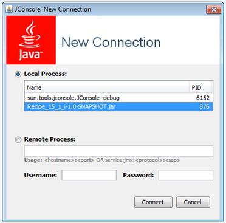
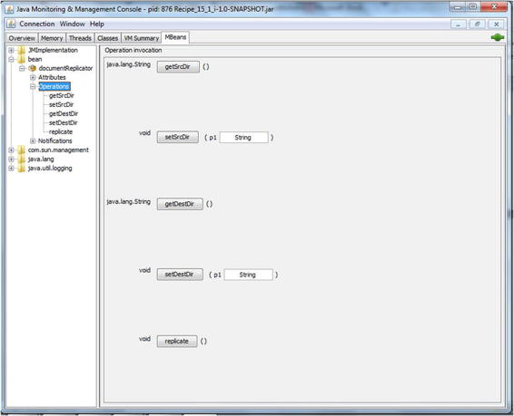
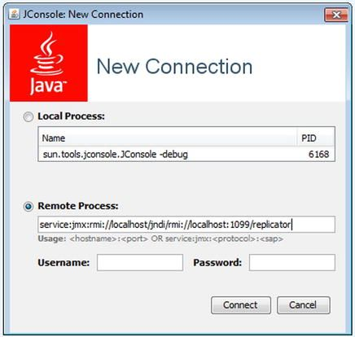
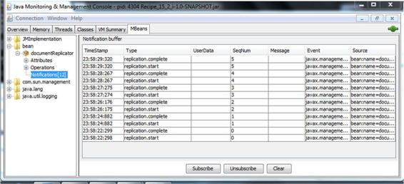
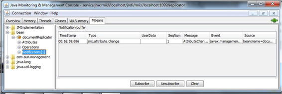

Spring Java Enterprise Services and Remoting Technologies
In this chapter, you will learn about Spring’s support for the most common Java enterprise services: Java Management Extensions (JMX), sending e-mail with JavaMail, and scheduling tasks with Quartz. In addition, you’ll learn about Spring’s support for various remoting technologies, such as RMI, Hessian, Burlap, HTTP Invoker, and SOAP web services.
JMX is part of JavaSE and is a technology for managing and monitoring system resources such as devices, applications, objects, and service-driven networks. These resources are represented as managed beans (MBeans)See also JMX MBeans. Spring supports JMX by exporting any Spring bean as model MBeans without programming against the JMX API. In addition, Spring can easily access remote MBeans.
JavaMail is the standard API and implementation for sending e-mail in Java. Spring further provides an abstract layer to send e-mail in an implementation-independent fashion.
There are two main options for scheduling tasks on the Java platform: JDK Timer and Quartz Scheduler (http://quartz-scheduler.org/). JDK Timer offers simple task scheduling features that are bundled with JDK. Compared with JDK Timer, Quartz offers more powerful job scheduling features. For both options, Spring supplies utility classes to configure scheduling tasks in a bean configuration file, without using either API directly.
Remoting is a key technology to develop distributed applications, especially multitier enterprise applications. It allows different applications or components, running in different JVMs or on different machines, to communicate with each other using a specific protocol.
Spring’s remoting support is consistent across different remoting technologies. On the server side, Spring allows you to expose an arbitrary bean as a remote service through a service exporter. On the client side, Spring provides various proxy factory beans for you to create a local proxy for a remote service so that you can use the remote service as if they were local beans.
You’ll learn how to use a series of remoting technologies that include: RMI, Hessian, Burlap, HTTP Invoker, and SOAP web services using Spring Web Services (Spring-WS).
14-1. Register Spring POJOs as JMX MBeans
Problem
You want to register an object in your Java application as a JMX MBean, to have the ability to look at services that are running and manipulate their state at runtime. This will allow you to run tasks like: rerun batch jobs, invoke methods, and change configuration metadata.
Solution
Spring supports JMX by allowing you to export any beans in its IoC container as model MBeans. This can be done simply by declaring an MBeanExporter instance. With Spring’s JMX support, you don’t need to deal with the JMX API directly. In addition, Spring enables you to declare JSR-160 (Java Management Extensions Remote API) connectors to expose MBeans for remote access over a specific protocol by using a factory bean. Spring provides factory beans for both servers and clients.
Spring’s JMX support comes with other mechanisms by which you can assemble an MBean’s management interface. These options include using exporting beans by method names, interfaces, and annotations. Spring can also detect and export MBeans automatically from beans declared in the IoC container and annotated with JMX-specific annotations defined by Spring.
How It Works
Suppose you’re developing a utility for replicating files from one directory to another. Let’s design the interface for this utility:
package com.apress.springrecipes.replicator;
...
public interface FileReplicator {
public String getSrcDir();
public void setSrcDir(String srcDir);
public String getDestDir();
public void setDestDir(String destDir);
public FileCopier getFileCopier();
public void setFileCopier(FileCopier fileCopier);
public void replicate() throws IOException;
}
The source and destination directories are designed as properties of a replicator object, not method arguments. That means each file replicator instance replicates files only for a particular source and destination directory. You can create multiple replicator instances in your application.
But before you implement this replicator, let’s create another interface that copies a file from one directory to another, given its name.
package com.apress.springrecipes.replicator;
...
public interface FileCopier {
public void copyFile(String srcDir, String destDir, String filename)
throws IOException;
}
There are many strategies for implementing this file copier. For instance, you can make use of the FileCopyUtils class provided by Spring.
package com.apress.springrecipes.replicator;
...
import org.springframework.util.FileCopyUtils;
public class FileCopierJMXImpl implements FileCopier {
public void copyFile(String srcDir, String destDir, String filename)
throws IOException {
File srcFile = new File(srcDir, filename);
File destFile = new File(destDir, filename);
FileCopyUtils.copy(srcFile, destFile);
}
}
With the help of a file copier, you can implement the file replicator, as shown in the following code sample.
package com.apress.springrecipes.replicator;
import java.io.File;
import java.io.IOException;
public class FileReplicatorJMXImpl implements FileReplicator {
private String srcDir;
private String destDir;
private FileCopier fileCopier;
// getters ommited for brevity
// setters
public void setSrcDir(String srcDir) {
this.srcDir = srcDir;
}
public void setDestDir(String destDir) {
this.destDir = destDir;
}
public void setFileCopier(FileCopier fileCopier) {
this.fileCopier = fileCopier;
}
public synchronized void replicate() throws IOException {
File[] files = new File(srcDir).listFiles();
for (File file : files) {
if (file.isFile()) {
fileCopier.copyFile(srcDir, destDir, file.getName());
}
}
}
}
Each time you call the replicate() method, all files in the source directory are replicated to the destination directory. To avoid unexpected problems caused by concurrent replication, you declare this method as synchronized.
Now, you can configure one or more file replicator instances in a Java Config class. The documentReplicator instance needs references to two directories: a source directory from which files are read and a target directory to which files are backed up. The code in this example attempts to read from a directory called docs in your operating system user’s home directory and then copy to a folder called docs_backup in your operating system user’s home directory. When this bean starts up, it creates the two directories if they don’t already exist there.
 Tip The “home directory” is different for each operating system, but typically on Unix it’s the directory that ~ resolves to. On a Linux box, the folder might be /home/user. On Mac OS X, the folder might be /Users/user, and on Windows it might be similar to C:\Documents and Settings\user.
Tip The “home directory” is different for each operating system, but typically on Unix it’s the directory that ~ resolves to. On a Linux box, the folder might be /home/user. On Mac OS X, the folder might be /Users/user, and on Windows it might be similar to C:\Documents and Settings\user.
package com.apress.springrecipes.replicator.config;
...
@Configuration
public class FileReplicatorConfig {
@Value("#{systemProperties['user.home']}/docs")
private String srcDir;
@Value("#{systemProperties['user.home']}/docs_backup")
private String destDir;
@Bean
public FileCopier fileCopier() {
FileCopier fCop = new FileCopierJMXImpl();
return fCop;
}
@Bean
public FileReplicator documentReplicator() {
FileReplicator fRep = new FileReplicatorJMXImpl();
fRep.setSrcDir(srcDir);
fRep.setDestDir(destDir);
fRep.setFileCopier(fileCopier());
return fRep;
}
@PostConstruct
public void verifyDirectoriesExist() {
File src = new File(srcDir);
File dest = new File(destDir);
if (!src.exists())
src.mkdirs();
if (!dest.exists())
dest.mkdirs();
}
}
Initially two fields are declared using the @Value annotations to gain access to the user’s home directory and define the source and destination directories. Next, two bean instances are created using the @Bean annotation. Notice the @PostConstuct annotation on the verifyDirectoriesExist(), which ensures the source and destination directories exist.
Now that we have the application’s core beans, let’s take look at how to register and access the beans as an MBean.
Register MBeans without Spring’s Support
First, let’s see how to register a model MBean using the JMX API directly. In the following Main class, you get the FileReplicator bean from the IoC container and register it as an MBean for management and monitoring. All properties and methods are included in the MBean’s management interface.
package com.apress.springrecipes.replicator;
...
import java.lang.management.ManagementFactory;
import javax.management.Descriptor;
import javax.management.JMException;
import javax.management.MBeanServer;
import javax.management.ObjectName;
import javax.management.modelmbean.DescriptorSupport;
import javax.management.modelmbean.InvalidTargetObjectTypeException;
import javax.management.modelmbean.ModelMBeanAttributeInfo;
import javax.management.modelmbean.ModelMBeanInfo;
import javax.management.modelmbean.ModelMBeanInfoSupport;
import javax.management.modelmbean.ModelMBeanOperationInfo;
import javax.management.modelmbean.RequiredModelMBean;
import org.springframework.context.ApplicationContext;
import org.springframework.context.support.GenericXmlApplicationContext;
public class Main {
public static void main(String[] args) throws IOException {
ApplicationContext context =
new AnnotationConfigApplicationContext("com.apress.springrecipes.replicator.config");
FileReplicator documentReplicator = context.getBean(FileReplicator.class);
try {
MBeanServer mbeanServer = ManagementFactory.getPlatformMBeanServer();
ObjectName objectName = new ObjectName("bean:name=documentReplicator");
RequiredModelMBean mbean = new RequiredModelMBean();
mbean.setManagedResource(documentReplicator, "objectReference");
Descriptor srcDirDescriptor = new DescriptorSupport(new String[] {
"name=SrcDir", "descriptorType=attribute",
"getMethod=getSrcDir", "setMethod=setSrcDir" });
ModelMBeanAttributeInfo srcDirInfo = new ModelMBeanAttributeInfo(
"SrcDir", "java.lang.String", "Source directory",
true, true, false, srcDirDescriptor);
Descriptor destDirDescriptor = new DescriptorSupport(new String[] {
"name=DestDir", "descriptorType=attribute",
"getMethod=getDestDir", "setMethod=setDestDir" });
ModelMBeanAttributeInfo destDirInfo = new ModelMBeanAttributeInfo(
"DestDir", "java.lang.String", "Destination directory",
true, true, false, destDirDescriptor);
ModelMBeanOperationInfo getSrcDirInfo = new ModelMBeanOperationInfo(
"Get source directory",
FileReplicator.class.getMethod("getSrcDir"));
ModelMBeanOperationInfo setSrcDirInfo = new ModelMBeanOperationInfo(
"Set source directory",
FileReplicator.class.getMethod("setSrcDir", String.class));
ModelMBeanOperationInfo getDestDirInfo = new ModelMBeanOperationInfo(
"Get destination directory",
FileReplicator.class.getMethod("getDestDir"));
ModelMBeanOperationInfo setDestDirInfo = new ModelMBeanOperationInfo(
"Set destination directory",
FileReplicator.class.getMethod("setDestDir", String.class));
ModelMBeanOperationInfo replicateInfo = new ModelMBeanOperationInfo(
"Replicate files",
FileReplicator.class.getMethod("replicate"));
ModelMBeanInfo mbeanInfo = new ModelMBeanInfoSupport(
"FileReplicator", "File replicator",
new ModelMBeanAttributeInfo[] { srcDirInfo, destDirInfo },
null,
new ModelMBeanOperationInfo[] { getSrcDirInfo, setSrcDirInfo,
getDestDirInfo, setDestDirInfo, replicateInfo },
null);
mbean.setModelMBeanInfo(mbeanInfo);
mbeanServer.registerMBean(mbean, objectName);
} catch (JMException e) {
...
} catch (InvalidTargetObjectTypeException e) {
...
} catch (NoSuchMethodException e) {
...
}
System.in.read();
}
}
To register an MBean, you need an instance of the interface javax.managment.MBeanServer. You can call the static method ManagementFactory.getPlatformMBeanServer() to locate a platform MBean server. It will create an MBean server if none exists and then register this server instance for future use. Each MBean requires an MBean object name that includes a domain. The preceding MBean is registered under the domain bean with the name documentReplicator.
From the preceding code, you can see that for each MBean attribute and MBean operation, you need to create a ModelMBeanAttributeInfo object and a ModelMBeanOperationInfo object for describing it. After those, you have to create a ModelMBeanInfo object for describing the MBean’s management interface by assembling the preceding information. For details about using these classes, you can consult their Javadocs.
Moreover, you have to handle the JMX-specific exceptions when calling the JMX API. These exceptions are checked exceptions that you must handle.
Note that you must prevent your application from terminating before you look inside it with a JMX client tool. Requesting a key from the console using System.in.read() is a good choice.
Finally, you have to add the VM argument -Dcom.sun.management.jmxremote to enable local monitoring of this application. If you’re using the book’s source code, you can use the following:
java -Dcom.sun.management.jmxremote -jar Recipe_14_1_i-1.0-SNAPSHOT.jar
Now, you can use any JMX client tools to monitor your MBeans locally. The simplest one is JConsole, which comes with JDK. To start JConsole, just execute the jconsole executable file located in the bin directory of the JDK installation.
When JConsole starts, you can see a list of JMX-enabled applications on the Local tab of the connection window. Select the process that corresponds to the running Spring app (i.e., Recipe_14_1_i-1.0-SNAPSHOT.jar). This is illustrated in Figure 14-1.

Figure 14-1. JConsole startup window
Caution If you’re on Windows, you may not see any processes in JConsole. This is a known bug where JConsole isn’t able to detect running Java processes. To solve this issue you’ll need to ensure the user has a hsperfdata folder in his temp folder. This folder is used by Java and JConsole to keep track of running processes and it may not exist. For example if you’re running application as user John.Doe, ensure the following path exists: C:\Users\John.Doe\AppData\Local\Temp\hsperfdata_John.Doe\
After connecting to the replicator application, go to the MBeans tab. Next, click on the Bean folder in the left-hand tree, followed by the operations section. In the main screen you’ll see a series of buttons to invoke the bean’s operations, to invoke replicate() simply click the button “replicate”. This screen is illustrated in Figure 14-2.

Figure 14-2. JConsole simulate Spring bean operation
You’ll see a ‘Method successfully invoked’ pop-up window. With this action all the filters in the source folder are copied/synchronized with those in the destination folder.
Register MBean with Spring support
The prior application relied on the use of the JMX API directly. As you saw in the Main application class, there’s a lot of code that can be difficult to write, manage, and sometimes understand. To export beans configured in the Spring IoC container as MBeans, you simply create an MBeanExporter instance and specify the beans to export, with their MBean object names as the keys. This can be done by adding the following configuration class. Note that the key entry in the beansToExport Map is used as the ObjectName for the bean referenced by the corresponding entry value.
package com.apress.springrecipes.replicator.config;
import com.apress.springrecipes.replicator.FileReplicator;
import org.springframework.beans.factory.annotation.Autowired;
import org.springframework.context.annotation.Bean;
import org.springframework.context.annotation.Configuration;
import org.springframework.jmx.export.MBeanExporter;
import java.util.HashMap;
import java.util.Map;
@Configuration
public class JmxConfig {
@Autowired
private FileReplicator fileReplicator;
@Bean
public MBeanExporter mbeanExporter() {
MBeanExporter mbeanExporter = new MBeanExporter();
mbeanExporter.setBeans(beansToExport());
return mbeanExporter;
}
private Map<String, Object> beansToExport() {
Map<String, Object> beansToExport = new HashMap<>();
beansToExport.put("bean:name=documentReplicator", fileReplicator);
return beansToExport;
}
}
The preceding configuration exports the FileReplicator bean as an MBean, under the domain bean and with the name documentReplicator. By default, all public properties are included as attributes and all public methods (with the exception of those from java.lang.Object) are included as operations in the MBean’s management interface.
And with the help of this Spring JMX exported the main class in the application can be cut down to the following lines:
package com.apress.springrecipes.replicator;
...
import org.springframework.context.annotation.AnnotationConfigApplicationContext;
public class Main {
public static void main(String[] args) throws IOException {
new AnnotationConfigApplicationContext("com.apress.springrecipes.replicator.config");
System.in.read();
}
}
Work with multiple MBean server instances
The Spring MBeanExporter approach can locate an MBean server instance and register MBeans with it implicitly. The JDK creates an MBean server the first time when you locate it, so there’s no need to create an MBean server explicitly. The same case applies if an application is running in an environment that provides an MBean server (e.g., a Java application server).
However, if you have multiple MBean servers running, you need to tell the mbeanServer bean to which server it should bind. You do this by specifying the agentId of the server. To figure out the agentId of a given server in JConsole, for example, go to the MBeans tab and in the left-hand tree go to JMImplementation/MBeanServerDelegate/Attributes/MBeanServerId. There, you’ll see the string value. On our local machine, the value is workstation_1253860476443. To enable it, configure the agentId property of the MBeanServer.
@Bean
public MBeanServerFactoryBean mbeanServer() {
MBeanServerFactoryBean mbeanServer = new MBeanServerFactoryBean();
mbeanServer.setLocateExistingServerIfPossible(true);
mbeanServer.setAgentId("workstation_1253860476443");
return mbeanServer;
}
If you have multiple MBean server instances in your context, you can explicitly specify a specific MBean server for MBeanExporter to export your MBeans to. In this case, MBeanExporter will not locate an MBean server; it will use the specified MBean server instance. This property is for you to specify a particular MBean server when more than one is available.
@Bean
public MBeanExporter mbeanExporter() {
MBeanExporter mbeanExporter = new MBeanExporter();
mbeanExporter.setBeans(beansToExport());
mbeanExporter.setServer(mbeanServer().getObject());
return mbeanExporter;
}
@Bean
public MBeanServerFactoryBean mbeanServer() {
MBeanServerFactoryBean mbeanServer = new MBeanServerFactoryBean();
mbeanServer.setLocateExistingServerIfPossible(true);
return mbeanServer;
}
Register MBeans for Remote Access with RMI
If you want your MBeans to be accessed remotely, you need to enable a remoting protocol for JMX. JSR-160 defines a standard for JMX remoting through a JMX connector. Spring allows you to create a JMX connector server through ConnectorServerFactoryBean.
By default, ConnectorServerFactoryBean creates and starts a JMX connector server bound to the service URL service:jmx:jmxmp://localhost:9875, which exposes the JMX connector through the JMX Messaging Protocol (JMXMP). However, most JMX implementations don’t support JMXMP. Therefore, you should choose a widely supported remoting protocol for your JMX connector, such as RMI. To expose your JMX connector through a specific protocol, you just provide the service URL for it.
@Bean
public FactoryBean<Registry> rmiRegistry() {
return new RmiRegistryFactoryBean();
}
@Bean
@DependsOn("rmiRegistry")
public FactoryBean<JMXConnectorServer> connectorServer() {
ConnectorServerFactoryBean connectorServerFactoryBean = new ConnectorServerFactoryBean();
connectorServerFactoryBean
.setServiceUrl("service:jmx:rmi://localhost/jndi/rmi://localhost:1099/replicator");
return connectorServerFactoryBean;
}
You specify the preceding URL to bind your JMX connector to an RMI registry listening on port 1099 of localhost. If no RMI registry has been created externally, you should create one by using RmiRegistryFactoryBean. The default port for this registry is 1099, but you can specify another one in its port property. Note that ConnectorServerFactoryBean must create the connector server after the RMI registry is created and ready. You can set the depends-on attribute for this purpose.
Now, your MBeans can be accessed remotely via RMI. Note there’s no need to start an RMI enabled app with the JMX -Dcom.sun.management.jmxremote flag, as you did in previous apps.
When JConsole starts, you can enter service:jmx:rmi://localhost/jndi/rmi://localhost:1099/replicator in the service URL on the ’Remote processes’ section of the connection window. This is illustrated in Figure 14-3.

Figure 14-3. JConsole connection to MBean through RMI
Once the connection is established, you can invoke bean methods just as you did with previous examples.
Assemble the Management Interface of MBeans
By default, the Spring MBeanExporter exports all public properties of a bean as MBean attributes and all public methods as MBean operations. But you can assemble the management interface of MBeans using an MBean assembler. The simplest MBean assembler in Spring is MethodNameBasedMBeanInfoAssembler, which allows you to specify the names of the methods to export.
@Configuration
public class JmxConfig {
...
@Bean
public MBeanExporter mbeanExporter() {
MBeanExporter mbeanExporter = new MBeanExporter();
mbeanExporter.setBeans(beansToExport());
mbeanExporter.setAssembler(assembler());
return mbeanExporter;
}
@Bean
public MBeanInfoAssembler assembler() {
MethodNameBasedMBeanInfoAssembler assembler;
assembler = new MethodNameBasedMBeanInfoAssembler();
assembler.setManagedMethods(new String[] {"getSrcDir","setSrcDir","getDestDir","setDestDir","replicate"});
return assembler;
}
Another MBean assembler is InterfaceBasedMBeanInfoAssembler, which exports all methods defined in the interfaces you specified.
@Bean
public MBeanInfoAssembler assembler() {
InterfaceBasedMBeanInfoAssembler assembler = new InterfaceBasedMBeanInfoAssembler();
assembler.setManagedInterfaces(new Class[] {FileReplicator.class});
return assembler;
}
Spring also provides MetadataMBeanInfoAssembler to assemble an MBean’s management interface based on the metadata in the bean class. It supports two types of metadata: JDK annotations and Apache Commons Attributes (behind the scenes, this is accomplished using a strategy interface JmxAttributeSource). For a bean class annotated with JDK annotations, you specify an AnnotationJmxAttributeSource instance as the attribute source of MetadataMBeanInfoAssembler.
@Bean
public MBeanInfoAssembler assembler() {
MetadataMBeanInfoAssembler assembler = new MetadataMBeanInfoAssembler();
assembler.setAttributeSource(new AnnotationJmxAttributeSource());
return assembler;
}
Then, you annotate your bean class and methods with the annotations @ManagedResource, @ManagedAttribute, and @ManagedOperation for MetadataMBeanInfoAssembler to assemble the management interface for this bean. The annotations are easily interpreted. They expose the element that they annotate. If you have a JavaBeans-compliant property, JMX will use the term attribute. Classes themselves are referred to as resources. In JMX, methods will be called operations. Knowing that, it’s easy to see what the following code does:
package com.apress.springrecipes.replicator;
...
import org.springframework.jmx.export.annotation.ManagedAttribute;
import org.springframework.jmx.export.annotation.ManagedOperation;
import org.springframework.jmx.export.annotation.ManagedResource;
@ManagedResource(description = "File replicator")
public class FileReplicatorJMXImpl implements FileReplicator {
...
@ManagedAttribute(description = "Get source directory")
public String getSrcDir() {
...
}
@ManagedAttribute(description = "Set source directory")
public void setSrcDir(String srcDir) {
...
}
@ManagedAttribute(description = "Get destination directory")
public String getDestDir() {
...
}
@ManagedAttribute(description = "Set destination directory")
public void setDestDir(String destDir) {
...
}
...
@ManagedOperation(description = "Replicate files")
public synchronized void replicate() throws IOException {
...
}
}
Register MBeans with Annotations
In addition to exporting a bean explicitly with MBeanExporter, you can simply configure its subclass AnnotationMBeanExporter to auto-detect MBeans from beans declared in the IoC container. You don’t need to configure an MBean assembler for this exporter, because it uses MetadataMBeanInfoAssembler with AnnotationJmxAttributeSource by default. You can delete the previous beans and assembler properties for this registration and simply leave the following:
@Configuration
public class JmxConfig {
@Bean
public MBeanExporter mbeanExporter() {
AnnotationMBeanExporter mbeanExporter = new AnnotationMBeanExporter();
return mbeanExporter;
}
}
AnnotationMBeanExporter detects any beans configured in the IoC container with the @ManagedResource annotation and exports them as MBeans. By default, this exporter exports a bean to the domain whose name is the same as its package name. Also, it uses the bean’s name in the IoC container as its MBean name, and the bean’s short class name as its type. So the documentReplicator bean will be exported under the following MBean object name:
com.apress.springrecipes.replicator:name=documentReplicator, type=FileReplicatorJMXImpl
If you don’t want to use the package name as the domain name, you can set the default domain for the exporter by adding the defaultDomain property.
@Bean
public MBeanExporter mbeanExporter() {
AnnotationMBeanExporter mbeanExporter = new AnnotationMBeanExporter();
mbeanExporter.setDefaultDomain("bean");
return mbeanExporter;
}
After setting the default domain to bean, the documentReplicator bean is exported under the following MBean object name:
bean:name=documentReplicator,type=FileReplicatorJMXImpl
In addition, you can specify a bean’s MBean object name in the objectName attribute of the @ManagedResource annotation. For example, you can export the file copier as an MBean by annotating it with the following annotations:
package com.apress.springrecipes.replicator;
...
import org.springframework.jmx.export.annotation.ManagedOperation;
import org.springframework.jmx.export.annotation.ManagedOperationParameter;
import org.springframework.jmx.export.annotation.ManagedOperationParameters;
import org.springframework.jmx.export.annotation.ManagedResource;
@ManagedResource(
objectName = "bean:name=fileCopier,type=FileCopierJMXImpl",
description = "File Copier")
public class FileCopierImpl implements FileCopier {
@ManagedOperation(
description = "Copy file from source directory to destination directory")
@ManagedOperationParameters( {
@ManagedOperationParameter(
name = "srcDir", description = "Source directory"),
@ManagedOperationParameter(
name = "destDir", description = "Destination directory"),
@ManagedOperationParameter(
name = "filename", description = "File to copy") })
public void copyFile(String srcDir, String destDir, String filename)
throws IOException {
...
}
}
However, specifying the object name in this way works only for classes that you’re going to create a single instance of in the IoC container (e.g., file copier), not for classes that you may create multiple instances of (e.g., file replicator). This is because you can only specify a single object name for a class. As a result, you shouldn’t try to run the same server multiple times without changing the names.
Finally, another possibility is to rely on Spring class scanning to export MBeans decorated with @ManagedResource. If the beans are initialized in a Java Config class, you can decorate the configuration class with the @EnableMBeanExport. This tells Spring to export any beans created with the @Bean annotation, which are decorated with the @EnableMBeanSupport.
package com.apress.springrecipes.replicator.config;
...
import org.springframework.context.annotation.EnableMBeanExport;
@Configuration
@EnableMBeanExport
public class FileReplicatorConfig {
....
@Bean
public FileReplicatorJMXImpl documentReplicator() {
FileReplicatorJMXImpl fRep = new FileReplicatorJMXImpl();
fRep.setSrcDir(srcDir);
fRep.setDestDir(destDir);
fRep.setFileCopier(fileCopier());
return fRep;
}
...
}
Due to the presence of the @EnableMBeanExport, the bean documentReplicatior of the type FileReplicatorJMXImpl gets exported as an MBean because its source is decorated with the @ManagedResource annotation.
Caution The use of the @EnableMBeanExport is done on @Bean instances with concrete classes, not interfaces like previous examples. Interface-based beans ’hide’ the target class, which also hide the JMX managed resource annotations and the MBean is not exported.
14-2. Publish and Listen to JMX Notifications
Problem
You want to publish JMX notifications from your MBeans and listen to them with JMX notification listeners.
Solution
Spring allows your beans to publish JMX notifications through the NotificationPublisher interface. You can also register standard JMX notification listeners in the IoC container to listen to JMX notifications.
How It Works
Publish JMX Notifications
The Spring IoC container supports the beans that are going to be exported as MBeans to publish JMX notifications. These beans must implement the NotificationPublisherAware interface, to get access to NotificationPublisher so that they can publish notifications.
package com.apress.springrecipes.replicator;
...
import javax.management.Notification;
import org.springframework.jmx.export.notification.NotificationPublisher;
import org.springframework.jmx.export.notification.NotificationPublisherAware;
@ManagedResource(description = "File replicator")
public class FileReplicatorImpl implements FileReplicator,
NotificationPublisherAware {
...
private int sequenceNumber;
private NotificationPublisher notificationPublisher;
public void setNotificationPublisher(
NotificationPublisher notificationPublisher) {
this.notificationPublisher = notificationPublisher;
}
@ManagedOperation(description = "Replicate files")
public void replicate() throws IOException {
notificationPublisher.sendNotification(
new Notification("replication.start", this, sequenceNumber));
...
notificationPublisher.sendNotification(
new Notification("replication.complete", this, sequenceNumber));
sequenceNumber++;
}
}
In this file replicator, you send a JMX notification whenever a replication starts or completes. The notification is visible both in the standard output in the console and can also be seen in the JConsole Notifications menu in the MBeans tab, as illustrated in Figure 14-4.

Figure 14-4. MBean events reported in JConsole
To see notifications in JConsole you must first click the ‘Subscribe’ button that appears toward the bottom, as illustrated in Figure 14-4. Then, when invoke the replicate() method using the JConsole button in the MBean ’operations’ section, you’ll see two new notifications arrive. The first argument in the Notification constructor is the notification type, while the second is the notification source.
Now, let’s create a notification listener to listen to JMX notifications. Because a listener will be notified of many different types of notifications, such as javax.management.AttributeChangeNotification when an MBean’s attribute has changed, you have to filter those notifications that you are interested in handling.
package com.apress.springrecipes.replicator;
import javax.management.Notification;
import javax.management.NotificationListener;
public class ReplicationNotificationListener implements NotificationListener {
public void handleNotification(Notification notification, Object handback) {
if (notification.getType().startsWith("replication")) {
System.out.println(
notification.getSource() + " " +
notification.getType() + " #" +
notification.getSequenceNumber());
}
}
}
Then, you can register this notification listener with your MBean exporter to listen to notifications emitted from certain MBeans.
@Bean
public AnnotationMBeanExporter mbeanExporter() {
AnnotationMBeanExporter mbeanExporter = new AnnotationMBeanExporter();
mbeanExporter.setDefaultDomain("bean");
mbeanExporter.setNotificationListenerMappings(notificationMappings());
return mbeanExporter;
}
public Map<String, NotificationListener> notificationMappings() {
Map<String, NotificationListener> mappings = new HashMap<>();
mappings.put("bean:name=documentReplicator,type=FileReplicatorJMXImpl",
new ReplicationNotificationListener());
return mappings;
}
14-3. Access Remote JMX MBeans in Spring
Problem
You want to access JMX MBeans running on a remote MBean server exposed by a JMX connector. When accessing remote MBeans directly with the JMX API, you have to write complex JMX-specific code.
Solution
Spring offers two approaches to simplify remote MBean access. First, it provides a factory bean to create an MBean server connection declaratively. With this server connection, you can query and update an MBean’s attributes, as well as invoke its operations. Second, Spring provides another factory bean that allows you to create a proxy for a remote MBean. With this proxy, you can operate a remote MBean as if it were a local bean.
How It Works
Access Remote MBeans through an MBean Server Connection
A JMX client requires an MBean server connection to access MBeans running on a remote MBean server. Spring provides org.springframework.jmx.support.MBeanServerConnectionFactoryBean for you to create a connection to a remote JSR-160–enabled MBean server declaratively. You only have to provide the service URL for it to locate the MBean server. Now let’s declare this factory bean in your client bean configuration file (e.g., beans-jmx-client.xml).
package com.apress.springrecipes.replicator.config;
import org.springframework.beans.factory.FactoryBean;
import org.springframework.context.annotation.Bean;
import org.springframework.context.annotation.Configuration;
import org.springframework.jmx.support.MBeanServerConnectionFactoryBean;
import javax.management.MBeanServerConnection;
import java.net.MalformedURLException;
@Configuration
public class JmxClientConfiguration {
@Bean
public FactoryBean<MBeanServerConnection> mbeanServerConnection()
throws MalformedURLException {
MBeanServerConnectionFactoryBean mBeanServerConnectionFactoryBean =
new MBeanServerConnectionFactoryBean();
mBeanServerConnectionFactoryBean
.setServiceUrl("service:jmx:rmi://localhost/jndi/rmi://localhost:1099/replicator");
return mBeanServerConnectionFactoryBean;
}
}
With the MBean server connection created by this factory bean, you can access and operate the MBeans running on the RMI server running on port 1099.
Tip You can use the RMI server presented in Recipe 14-1 which exposes MBeans. If you’re using the book’s source code, after you build the application with Gradle, you can start the server with the command: java -jar Recipe_14_1_iii-1.0-SNAPSHOT.jar.
With the connection established between both points, you can query and update an MBean’s attributes through the getAttribute() and setAttribute() methods, giving the MBean’s object name and attribute name. You can also invoke an MBean’s operations by using the invoke() method.
package com.apress.springrecipes.replicator;
import javax.management.Attribute;
import javax.management.MBeanServerConnection;
import javax.management.ObjectName;
import org.springframework.context.ApplicationContext;
import org.springframework.context.support.Generic XmlApplicationContext;
public class Client {
public static void main(String[] args) throws Exception {
ApplicationContext context =
new AnnotationConfigApplicationContext("com.apress.springrecipes.replicator.config");
MBeanServerConnection mbeanServerConnection = context.getBean(MBeanServerConnection.class);
ObjectName mbeanName = new ObjectName(
"bean:name=documentReplicator);
String srcDir = (String) mbeanServerConnection.getAttribute(
mbeanName, "SrcDir");
mbeanServerConnection.setAttribute(
mbeanName, new Attribute("DestDir", srcDir + "_backup"));
mbeanServerConnection.invoke(
mbeanName, "replicate", new Object[] {}, new String[] {});
}
}
In addition, let’s create a JMX notification listener, so we can listen in on file replication notifications:
package com.apress.springrecipes.replicator;
import javax.management.Notification;
import javax.management.NotificationListener;
public class ReplicationNotificationListener implements NotificationListener {
public void handleNotification(Notification notification, Object handback) {
if (notification.getType().startsWith("replication")) {
System.out.println(
notification.getSource() + " " +
notification.getType() + " #" +
notification.getSequenceNumber());
}
}
}
You can register this notification listener to the MBean server connection to listen to notifications emitted from this MBean server.
package com.apress.springrecipes.replicator;
...
import javax.management.MBeanServerConnection;
import javax.management.ObjectName;
public class Client {
public static void main(String[] args) throws Exception {
...
MBeanServerConnection mbeanServerConnection =
(MBeanServerConnection) context.getBean("mbeanServerConnection");
ObjectName mbeanName = new ObjectName(
"bean:name=documentReplicator);
mbeanServerConnection.addNotificationListener(
mbeanName, new ReplicationNotificationListener(), null, null);
...
}
}
After you run this application client, check JConsole for the RMI server application — using ‘Remote process’ at service:jmx:rmi://localhost/jndi/rmi://localhost:1099/replicator. Under the ‘Notifications’ menu of the MBeans tab, you’ll see new notification of type jmx.attribute.change as illustrated in Figure 14-5.

Figure 14-5. JConsole notification event invoked through RMI
Access Remote MBeans Through an MBean Proxy
Another approach that Spring offers for remote MBean access is through MBeanProxy, which can be created by MBeanProxyFactoryBean.
package com.apress.springrecipes.replicator.config;
...
import org.springframework.beans.factory.FactoryBean;
import org.springframework.jmx.access.MBeanProxyFactoryBean;
import org.springframework.jmx.support.MBeanServerConnectionFactoryBean;
import javax.management.MBeanServerConnection;
import java.net.MalformedURLException;
@Configuration
public class JmxClientConfiguration {
...
@Bean
public MBeanProxyFactoryBean fileReplicatorProxy() throws Exception {
MBeanProxyFactoryBean fileReplicatorProxy = new MBeanProxyFactoryBean();
fileReplicatorProxy.setServer(mbeanServerConnection().getObject());
fileReplicatorProxy.setObjectName("bean:name=documentReplicator");
fileReplicatorProxy.setProxyInterface(FileReplicator.class);
return fileReplicatorProxy;
}
}
You need to specify the object name and the server connection for the MBean you are going to proxy. The most important is the proxy interface, whose local method calls will be translated into remote MBean calls behind the scenes.
Now, you can operate the remote MBean through this proxy as if it were a local bean. The preceding MBean operations invoked on the MBean server connection directly can be simplified as follows:
package com.apress.springrecipes.replicator;
...
public class Client {
public static void main(String[] args) throws Exception {
...
FileReplicator fileReplicatorProxy = context.getBean(FileReplicator.class);
String srcDir = fileReplicatorProxy.getSrcDir();
fileReplicatorProxy.setDestDir(srcDir + "_backup");
fileReplicatorProxy.replicate();
}
}
14-4. Send E-mail with Spring’s E-mail Support
Problem
Many applications need to send e-mail. In a Java application, you can send e-mail with the JavaMail API. However, when using JavaMail, you have to handle JavaMail-specific mail sessions and exceptions. As a result, an application becomes JavaMail dependent and hard to switch to another e-mail API.
Solution
Spring’s e-mail support makes it easier to send e-mail by providing an abstract and implementation-independent API for sending e-mail. The core interface of Spring’s e-mail support is MailSender.
The JavaMailSender interface is a subinterface of MailSender that includes specialized JavaMail features such as Multipurpose Internet Mail Extensions (MIME message support. To send an e-mail message with HTML content, inline images, or attachments, you have to send it as a MIME message.
How It Works
Suppose you want the file replicator application from the previous recipes to notify the administrator of any error. First, you create the following ErrorNotifier interface, which includes a method for notifying of a file copy error:
package com.apress.springrecipes.replicator;
public interface ErrorNotifier {
public void notifyCopyError(String srcDir, String destDir, String filename);
}
Note Invoking this notifier in case of error is left for you to accomplish. As you can consider error handling a crosscutting concern, AOP would be an ideal solution to this problem. You can write an after throwing advice to invoke this notifier.
Next, you can implement this interface to send a notification in a way of your choice. The most common way is to send e-mail. Before you implement the interface in this way, you may need a local e-mail server that supports the Simple Mail Transfer Protocol (SMTP) for testing purposes. We recommend installing Apache James Server (http://james.apache.org/server/index.html), which is very easy to install and configure.
Note You can download Apache James Server (e.g., version 2.3.2) from the Apache James web site and extract it to a directory of your choice to complete the installation. To start it, just execute the run script (located in the bin directory).
Let’s create two user accounts for sending and receiving e-mail with this server. By default, the remote manager service of James listens on port 4555. You can telnet, using a console, to this port and run the following commands to add the users system and admin, whose passwords are 12345:
> telnet 127.0.0.1 4555
JAMES Remote Administration Tool 2.3.2
Please enter your login and password
Login id:
root
Password:
itroot
Welcome root. HELP for a list of commands
adduser system 12345
User system added
adduser admin 12345
User admin added
listusers
Existing accounts 2
user: admin
user: system
quit
Bye
Send E-mail Using the JavaMail API
Now, let’s take a look at how to send e-mail using the JavaMail API. You can implement the ErrorNotifier interface to send e-mail notifications in case of errors.
package com.apress.springrecipes.replicator;
import java.util.Properties;
import javax.mail.Message;
import javax.mail.MessagingException;
import javax.mail.Session;
import javax.mail.Transport;
import javax.mail.internet.InternetAddress;
import javax.mail.internet.MimeMessage;
public class EmailErrorNotifier implements ErrorNotifier {
public void notifyCopyError(String srcDir, String destDir, String filename) {
Properties props = new Properties();
props.put("mail.smtp.host", "localhost");
props.put("mail.smtp.port", "25");
props.put("mail.smtp.username", "system");
props.put("mail.smtp.password", "12345");
Session session = Session.getDefaultInstance(props, null);
try {
Message message = new MimeMessage(session);
message.setFrom(new InternetAddress("system@localhost"));
message.setRecipients(Message.RecipientType.TO,
InternetAddress.parse("admin@localhost"));
message.setSubject("File Copy Error");
message.setText(
"Dear Administrator,\n\n" +
"An error occurred when copying the following file :\n" +
"Source directory : " + srcDir + "\n" +
"Destination directory : " + destDir + "\n" +
"Filename : " + filename);
Transport.send(message);
} catch (MessagingException e) {
throw new RuntimeException(e);
}
}
}
You first open a mail session connecting to an SMTP server by defining the properties. Then, you create a message from this session for constructing your e-mail. After that, you send the e-mail by making a call to Transport.send(). When dealing with the JavaMail API, you have to handle the checked exception MessagingException. Note that all of these classes, interfaces, and exceptions are defined by JavaMail.
Next, declare an instance of EmailErrorNotifier in the Spring IoC container for sending e-mail notifications in case of file replication errors.
package com.apress.springrecipes.replicator.config;
import com.apress.springrecipes.replicator.EmailErrorNotifier;
import com.apress.springrecipes.replicator.ErrorNotifier;
import org.springframework.context.annotation.Bean;
import org.springframework.context.annotation.Configuration;
@Configuration
public class MailConfiguration {
@Bean
public ErrorNotifier errorNotifier() {
return new EmailErrorNotifier();
}
}
You can write the following Main class to test EmailErrorNotifier. After running it, you can configure your e-mail application to receive the e-mail from your James Server via POP3.
package com.apress.springrecipes.replicator;
import org.springframework.context.ApplicationContext;
import org.springframework.context.support.GenericXmlApplicationContext;
public class Main {
public static void main(String[] args) {
ApplicationContext context =
new AnnotationConfigApplicationContext("com.apress.springrecipes.replicator.config");
ErrorNotifier errorNotifier = context.getBean(ErrorNotifier.class);
errorNotifier.notifyCopyError("c:/documents", "d:/documents", "spring.doc");
}
}
To verify the email was sent, you can login to the POP server included with Apache James. You can telnet, using a console, to port 110 and run the following commands to view the email for user admin, whose password is the same you set on creation:
> telnet 127.0.0.1 110
OK workstation POP3 server <JAMES POP3 Server 2.3.2> ready
USER admin
+OK
PASS 12345
+OK Welcome admin
LIST
+ OK 1 698
RETR 1
+OK Message follows
...
Send E-mail with Spring’s MailSender
Now, let’s look at how to send e-mail with the help of Spring’s MailSender interface, which can send SimpleMailMessage in its send() method. With this interface, your code is no longer JavaMail specific, and now it’s easier to test.
package com.apress.springrecipes.replicator;
import org.springframework.mail.MailSender;
import org.springframework.mail.SimpleMailMessage;
public class EmailErrorNotifier implements ErrorNotifier {
private MailSender mailSender;
public void setMailSender(MailSender mailSender) {
this.mailSender = mailSender;
}
public void notifyCopyError(String srcDir, String destDir, String filename) {
SimpleMailMessage message = new SimpleMailMessage();
message.setFrom("system@localhost");
message.setTo("admin@localhost");
message.setSubject("File Copy Error");
message.setText(
"Dear Administrator,\n\n" +
"An error occurred when copying the following file :\n" +
"Source directory : " + srcDir + "\n" +
"Destination directory : " + destDir + "\n" +
"Filename : " + filename);
mailSender.send(message);
}
}
Next, you have to configure a MailSender implementation in the bean configuration file and inject it into EmailErrorNotifier. In Spring, the unique implementation of this interface is JavaMailSenderImpl, which uses JavaMail to send e-mail.
@Configuration
public class MailConfiguration {
@Bean
public ErrorNotifier errorNotifier() {
EmailErrorNotifier errorNotifier = new EmailErrorNotifier();
errorNotifier.setMailSender(mailSender());
return errorNotifier;
}
@Bean
public JavaMailSenderImpl mailSender() {
JavaMailSenderImpl mailSender = new JavaMailSenderImpl();
mailSender.setHost("localhost");
mailSender.setPort(25);
mailSender.setUsername("system");
mailSender.setPassword("12345");
return mailSender;
}
}
The default port used by JavaMailSenderImpl is the standard SMTP port 25, so if your e-mail server listens on this port for SMTP, you can simply omit this property. Also, if your SMTP server doesn’t require user authentication, you needn’t set the username and password.
If you have a JavaMail session configured in your Java app server, you can first look it up with the help of JndiLocatorDelegate.
@Bean
public Session mailSession() throws NamingException {
return JndiLocatorDelegate
.createDefaultResourceRefLocator()
.lookup("mail/Session", Session.class);
}
You can inject the JavaMail session into JavaMailSenderImpl for its use. In this case, you no longer need to set the host, port, username, or password.
@Bean
public JavaMailSenderImpl mailSender() {
JavaMailSenderImpl mailSender = new JavaMailSenderImpl();
mailSender.setSession(mailSession());
return mailSender;
}
Define an E-mail Template
Constructing an e-mail message from scratch in the method body is not efficient, because you have to hard-code the e-mail properties. Also, you may have difficulty in writing the e-mail text in terms of Java strings. You can consider defining an e-mail message template in the bean configuration file and construct a new e-mail message from it.
@Configuration
public class MailConfiguration {
...
@Bean
public ErrorNotifier errorNotifier() {
EmailErrorNotifier errorNotifier = new EmailErrorNotifier();
errorNotifier.setMailSender(mailSender());
errorNotifier.setCopyErrorMailMessage(copyErrorMailMessage());
return errorNotifier;
}
@Bean
public SimpleMailMessage copyErrorMailMessage() {
SimpleMailMessage message = new SimpleMailMessage();
message.setFrom("system@localhost");
message.setTo("admin@localhost");
message.setSubject("File Copy Error");
message.setText("Dear Administrator,\n" +
"\n" +
" An error occurred when copying the following file :\n" +
"\t\t Source directory : %s\n" +
"\t\t Destination directory : %s\n" +
"\t\t Filename : %s");
return message;
}
}
Note that in the preceding message text, you include the placeholders %s, which will be replaced by message parameters through String.format(). Of course, you can also use a powerful templating language such as Velocity or FreeMarker to generate the message text according to a template. It’s also a good practice to separate mail message templates from bean configuration files.
Each time you send e-mail, you can construct a new SimpleMailMessage instance from this injected template. Then you can generate the message text using String.format() to replace the %s placeholders with your message parameters.
package com.apress.springrecipes.replicator;
...
import org.springframework.mail.SimpleMailMessage;
public class EmailErrorNotifier implements ErrorNotifier {
...
private SimpleMailMessage copyErrorMailMessage;
public void setCopyErrorMailMessage(SimpleMailMessage copyErrorMailMessage) {
this.copyErrorMailMessage = copyErrorMailMessage;
}
public void notifyCopyError(String srcDir, String destDir, String filename) {
SimpleMailMessage message = new SimpleMailMessage(copyErrorMailMessage);
message.setText(String.format(
copyErrorMailMessage.getText(), srcDir, destDir, filename));
mailSender.send(message);
}
}
Send e-mail with attachments (MIME Messages)
So far, the SimpleMailMessage class you used can send only a simple plain text e-mail message. To send e-mail that contains HTML content, inline images, or attachments, you have to construct and send a MIME message instead. MIME is supported by JavaMail through the javax.mail.internet.MimeMessage class.
First of all, you have to use the JavaMailSender interface instead of its parent interface MailSender. The JavaMailSenderImpl instance you injected does implement this interface, so you needn’t modify your bean configurations. The following notifier sends Spring’s bean configuration file as an e-mail attachment to the administrator:
package com.apress.springrecipes.replicator;
import javax.mail.MessagingException;
import javax.mail.internet.MimeMessage;
import org.springframework.core.io.ClassPathResource;
import org.springframework.mail.MailParseException;
import org.springframework.mail.SimpleMailMessage;
import org.springframework.mail.javamail.JavaMailSender;
import org.springframework.mail.javamail.MimeMessageHelper;
public class EmailErrorNotifier implements ErrorNotifier {
private JavaMailSender mailSender;
private SimpleMailMessage copyErrorMailMessage;
public void setMailSender(JavaMailSender mailSender) {
this.mailSender = mailSender;
}
public void setCopyErrorMailMessage(SimpleMailMessage copyErrorMailMessage) {
this.copyErrorMailMessage = copyErrorMailMessage;
}
public void notifyCopyError(String srcDir, String destDir, String filename) {
MimeMessage message = mailSender.createMimeMessage();
try {
MimeMessageHelper helper = new MimeMessageHelper(message, true);
helper.setFrom(copyErrorMailMessage.getFrom());
helper.setTo(copyErrorMailMessage.getTo());
helper.setSubject(copyErrorMailMessage.getSubject());
helper.setText(String.format(
copyErrorMailMessage.getText(), srcDir, destDir, filename));
ClassPathResource config = new ClassPathResource("beans.xml");
helper.addAttachment("beans.xml", config);
} catch (MessagingException e) {
throw new MailParseException(e);
}
mailSender.send(message);
}
}
Unlike SimpleMailMessage, the MimeMessage class is defined by JavaMail, so you can only instantiate it by calling mailSender.createMimeMessage(). Spring provides the helper class MimeMessageHelper to simplify the operations of MimeMessage. It allows you to add an attachment from a Spring Resource object. However, the operations of this helper class can still throw JavaMail’s MessagingException. You have to convert this exception into Spring’s mail runtime exception for consistency.
Spring offers another method for you to construct a MIME message, which is through implementing the MimeMessagePreparator interface.
package com.apress.springrecipes.replicator;
...
import javax.mail.internet.MimeMessage;
import org.springframework.mail.javamail.MimeMessagePreparator;
public class EmailErrorNotifier implements ErrorNotifier {
...
public void notifyCopyError(
final String srcDir, final String destDir, final String filename) {
MimeMessagePreparator preparator = new MimeMessagePreparator() {
public void prepare(MimeMessage mimeMessage) throws Exception {
MimeMessageHelper helper =
new MimeMessageHelper(mimeMessage, true);
helper.setFrom(copyErrorMailMessage.getFrom());
helper.setTo(copyErrorMailMessage.getTo());
helper.setSubject(copyErrorMailMessage.getSubject());
helper.setText(String.format(
copyErrorMailMessage.getText(), srcDir, destDir, filename));
ClassPathResource config = new ClassPathResource("beans.xml");
helper.addAttachment("beans.xml", config);
}
};
mailSender.send(preparator);
}
}
In the prepare() method, you can prepare the MimeMessage object, which is precreated for JavaMailSender. If there’s any exception thrown, it will be converted into Spring’s mail runtime exception automatically.
14-5. Schedule tasks with Spring’s Quartz Support
Problem
Your application has an advanced scheduling requirement that you want to fulfill using Quartz Scheduler. Such a requirement might be something seemingly complex like the ability to run at arbitrary times, or at strange intervals (“every other Thursday, but only after 10 am and before 2 pm”). Moreover, you want to configure scheduling jobs in a declarative way.
Solution
Spring provides utility classes for Quartz to enable scheduling jobs without programming against the Quartz API.
How It Works
Use Quartz Without Spring’s Support
To use Quartz for scheduling, you first need to create a job by implementing the Job interface. For example, the following job executes the replicate() method of the file replicator designed in the previous recipes. It retrieves a job data map — which is a Quartz concept to define jobs — through the JobExecutionContext object.
package com.apress.springrecipes.replicator;
...
import org.quartz.Job;
import org.quartz.JobExecutionContext;
import org.quartz.JobExecutionException;
public class FileReplicationJob implements Job {
public void execute(JobExecutionContext context)
throws JobExecutionException {
Map dataMap = context.getJobDetail().getJobDataMap();
FileReplicator fileReplicator =
(FileReplicator) dataMap.get("fileReplicator");
try {
fileReplicator.replicate();
} catch (IOException e) {
throw new JobExecutionException(e);
}
}
}
After creating the job, you configure and schedule it with the Quartz API. For instance, the following scheduler runs your file replication job every 60 seconds with a 5-second delay for the first time of execution:
package com.apress.springrecipes.replicator;
...
import org.quartz.JobDetail;
import org.quartz.JobDataMap;
import org.quartz.JobBuilder;
import org.quartz.Trigger;
import org.quartz.TriggerBuilder;
import org.quartz.SimpleScheduleBuilder;
import org.quartz.DateBuilder.IntervalUnit.*;
import org.quartz.Scheduler;
import org.quartz.impl.StdSchedulerFactory;
import org.springframework.context.ApplicationContext;
import org.springframework.context.support.GenericXmlApplicationContext;
public class Main {
public static void main(String[] args) throws Exception {
ApplicationContext context =
new AnnotationConfigApplicationContext("com.apress.springrecipes.replicator.config");
FileReplicator documentReplicator = context.getBean(FileReplicator.class);
JobDataMap jobDataMap = new JobDataMap();
jobDataMap.put("fileReplicator", documentReplicator);
JobDetail job = JobBuilder.newJob(FileReplicationJob.class)
.withIdentity("documentReplicationJob")
.storeDurably()
.usingJobData(jobDataMap)
.build();
Trigger trigger = TriggerBuilder.newTrigger()
.withIdentity("documentReplicationTrigger")
.startAt(new Date(System.currentTimeMillis() + 5000))
.forJob(job)
.withSchedule(SimpleScheduleBuilder.simpleSchedule()
.withIntervalInSeconds(60)
.repeatForever())
.build();
Scheduler scheduler = new StdSchedulerFactory().getScheduler();
scheduler.start();
scheduler.scheduleJob(job, trigger);
}
}
In the Main class, you first create a job map. In this case it’s a single job, where the key is a descriptive name and the value is an object reference for the job. Next, you define the job details for the file replication job in a Job Detail object and prepare job data in its jobDataMap property. Next, you create a SimpleTrigger object to configure the scheduling properties. Finally, you create a scheduler to run your job using this trigger.
Quartz supports various types of schedules to run jobs at different intervals. Schedules are defined as part of triggers. In the most recent release Quartz schedules are: SimpleScheduleBuilder, CronScheduleBuilder, CalendarIntervalScheduleBuilder and DailyTimeIntervalScheduleBuilder. SimpleScheduleBuilder allows you to schedule jobs setting properties such as start time, end time, repeat interval, and repeat count. CronScheduleBuilder accepts a Unix cron expression for you to specify the times to run your job. For example, you can replace the preceding SimpleScheduleBuilder with the following CronScheduleBuilder to run a job at 17:30 every day:
.withSchedule(CronScheduleBuilder.cronSchedule(" 0 30 17 * * ?"))
A cron expression is made up of seven fields (the last field is optional), separated by spaces. Table 14-1 shows the field description for a cron expression.
Table 14-1. Field Description for a Cron Expression
Position | Field Name | Range |
|---|---|---|
1 | Second | 0–59 |
2 | Minute | 0–59 |
3 | Hour | 0–23 |
4 | Day of month | 1–31 |
5 | Month | 1–12 or JAN–DEC |
6 | Day of week | 1–7 or SUN–SAT |
7 | Year (optional) | 1970–2099 |
Each part of a cron expression can be assigned a specific value (e.g., 3), a range (e.g., 1–5), a list (e.g., 1,3,5), a wildcard (* matches all values), or a question mark (? is used in either of the “Day of month” and “Day of week” fields for matching one of these fields but not both).
CalendarIntervalScheduleBuilder allows you to schedule jobs based on calendar times (day, week, month, year), whereas the DailyTimeIntervalScheduleBuilder provides convenience utilities to set a job’s end time (e.g., methods like endingDailyAt() & endingDailyAfterCount())
Use Quartz with Spring’s Support
When using Quartz, you can create a job by implementing the Job interface and retrieve job data from the job data map through JobExecutionContext. To decouple your job class from the Quartz API, Spring provides QuartzJobBean, which you can extend to retrieve job data through setter methods. QuartzJobBean converts the job data map into properties and injects them via the setter methods.
package com.apress.springrecipes.replicator;
...
import org.quartz.JobExecutionContext;
import org.quartz.JobExecutionException;
import org.springframework.scheduling.quartz.QuartzJobBean;
public class FileReplicationJob extends QuartzJobBean {
private FileReplicator fileReplicator;
public void setFileReplicator(FileReplicator fileReplicator) {
this.fileReplicator = fileReplicator;
}
protected void executeInternal(JobExecutionContext context)
throws JobExecutionException {
try {
fileReplicator.replicate();
} catch (IOException e) {
throw new JobExecutionException(e);
}
}
}
Then, you can configure a Quartz JobDetail object in Spring’s bean configuration file through JobDetailBean. By default, Spring uses this bean’s name as the job name. You can modify it by setting the name property.
@Bean
@Autowired
public JobDetailFactoryBean documentReplicationJob(FileReplicator fileReplicator) {
JobDetailFactoryBean documentReplicationJob = new JobDetailFactoryBean();
documentReplicationJob.setJobClass(FileReplicationJob.class);
documentReplicationJob.setDurability(true);
documentReplicationJob.setJobDataAsMap(Collections.singletonMap("fileReplicator", fileReplicator));
return documentReplicationJob;
}
Spring also offers MethodInvokingJobDetailFactoryBean for you to define a job that executes a single method of a particular object. This saves you the trouble of creating a job class. You can use the following job detail to replace the previous:
@Bean
@Autowired
public MethodInvokingJobDetailFactoryBean documentReplicationJob(FileReplicator fileReplicator) {
MethodInvokingJobDetailFactoryBean documentReplicationJob =
new MethodInvokingJobDetailFactoryBean();
documentReplicationJob.setTargetObject(fileReplicator);
documentReplicationJob.setTargetMethod("replicatie");
return documentReplicationJob;
}
Once you define a job , you can configure a Quartz Trigger. Spring supports the SimpleTriggerFactoryBean and the CronTriggerFactoryBean. The SimpleTriggerFactoryBean, requires a reference to a JobDetail object and provides common values for schedule properties, such as start time and repeat count.
@Bean
@Autowired
public SimpleTriggerFactoryBean documentReplicationTrigger(JobDetail documentReplicationJob) {
SimpleTriggerFactoryBean documentReplicationTrigger = new SimpleTriggerFactoryBean();
documentReplicationTrigger.setJobDetail(documentReplicationJob);
documentReplicationTrigger.setStartDelay(5000);
documentReplicationTrigger.setRepeatInterval(60000);
return documentReplicationTrigger;
}
You can also use the CronTriggerFactoryBean to configure a cron like schedule.
@Bean
@Autowired
public CronTriggerFactoryBean documentReplicationTrigger(JobDetail documentReplicationJob) {
CronTriggerFactoryBean documentReplicationTrigger = new CronTriggerFactoryBean();
documentReplicationTrigger.setJobDetail(documentReplicationJob);
documentReplicationTrigger.setStartDelay(5000);
documentReplicationTrigger.setCronExpression("0/60 * * * * ?");
return documentReplicationTrigger;
}
Finally, you once you have the Quartz job and trigger, you can configure a SchedulerFactoryBean instance to create a Scheduler object for running your trigger. You can specify multiple triggers in this factory bean.
@Bean
@Autowired
public SchedulerFactoryBean scheduler(Trigger[] triggers) {
SchedulerFactoryBean scheduler = new SchedulerFactoryBean();
scheduler.setTriggers(triggers);
return scheduler;
}
Now, you can simply start your scheduler with the following Main class. In this way, you don’t require a single line of code for scheduling jobs.
package com.apress.springrecipes.replicator;
import org.springframework.context.annotation.AnnotationConfigApplicationContext;
public class Main {
public static void main(String[] args) throws Exception {
new AnnotationConfigApplicationContext("com.apress.springrecipes.replicator.config");
}
}
14-6. Schedule tasks with Spring’s Scheduling
Problem
You want to schedule a method invocation in a consistent manner, using either a cron expression, an interval, or a rate, and you don’t want to have to go through Quartz just to do it.
Solution
Spring has support to configure TaskExecutors and TaskSchedulers. This capability, coupled with the ability to schedule method execution using the @Scheduled annotation, makes Spring scheduling support work with a minimum of fuss: all you need are a method, an annotation, and to have switched on the scanner for annotations.
How It Works
Let’s revisit the example in the last recipe: we want to schedule a call to the replication method on the bean using a cron expression. Our configuration class looks like the following:
package com.apress.springrecipes.replicator.config;
import org.springframework.context.annotation.Bean;
import org.springframework.context.annotation.Configuration;
import org.springframework.scheduling.annotation.EnableScheduling;
import org.springframework.scheduling.annotation.SchedulingConfigurer;
import org.springframework.scheduling.config.ScheduledTaskRegistrar;
import java.util.concurrent.Executor;
import java.util.concurrent.Executors;
@Configuration
@EnableScheduling
public class SchedulingConfiguration implements SchedulingConfigurer {
@Override
public void configureTasks(ScheduledTaskRegistrar taskRegistrar) {
taskRegistrar.setScheduler(scheduler());
}
@Bean(destroyMethod = "shutdown")
public Executor scheduler() {
return Executors.newScheduledThreadPool(10);
}
}
We enable the annotation driven scheduling support by specifying @EnableScheduling., this will register a bean which scans the beans in the application context for the @Scheduled annotation. We also implemented the interface SchedulingConfigurer as we wanted to do some additional configuration of our scheduler. We want to give it a pool of 10 threads to execute our scheduled tasks.
package com.apress.springrecipes.replicator;
import org.springframework.scheduling.annotation.Scheduled;
import java.io.File;
import java.io.IOException;
public class FileReplicatorImpl implements FileReplicator {
...
@Scheduled(fixedDelay = 60 * 1000)
public synchronized void replicate() throws IOException {
File[] files = new File(srcDir).listFiles();
for (File file : files) {
if (file.isFile()) {
fileCopier.copyFile(srcDir, destDir, file.getName());
}
}
}
}
Note that we’ve annotated the replicate() method with a @Scheduled annotation. Here, we’ve told the scheduler to execute the method every 60 seconds. Alternatively, we might specify a fixedRate value for the @Scheduled annotation, which would measure the time between successive starts and then trigger another run.
@Scheduled(fixedRate = 60 * 1000)
public synchronized void replicate() throws IOException {
File[] files = new File(srcDir).listFiles();
for (File file : files) {
if (file.isFile()) {
fileCopier.copyFile(srcDir, destDir, file.getName());
}
}
}
Finally, we might want more complex control over the execution of the method. In this case, we can use a cron expression, just as we did in the Quartz example.
@Scheduled( cron = "0/60 * * * * ? " )
public synchronized void replicate() throws IOException {
File[] files = new File(srcDir).listFiles();
for (File file : files) {
if (file.isFile()) {
fileCopier.copyFile(srcDir, destDir, file.getName());
}
}
}
There is support for configuring all of this in the Java too. This might be useful if you didn’t want to, or couldn’t, add an annotation to an existing bean method. Here’s a look at how we might re-create the preceding annotation-centric examples using the Spring ScheduledTaskRegistrar.
@Configuration
@EnableScheduling
public class SchedulingConfiguration implements SchedulingConfigurer {
@Autowired
private FileReplicator fileReplicator;
@Override
public void configureTasks(ScheduledTaskRegistrar taskRegistrar) {
taskRegistrar.setScheduler(scheduler();
taskRegistrar.addFixedDelayTask(new Runnable(){
@Override
public void run() {
try {
fileReplicator.replicate();
} catch (IOException e) {
e.printStackTrace();
}
}
}, 60000);
}
@Bean(destroyMethod = "shutdown")
public Executor scheduler() {
return Executors.newScheduledThreadPool(10);
}
}
14-7. Expose and Invoke Services through RMI
Problem
You want to expose a service from your Java application for other Java-based clients to invoke remotely. Because both parties are running on the Java platform, you can choose a pure Java-based solution without considering cross-platform portability.
Solution
Remote Method Invocation (RMI) is a Java-based remoting technology that allows two Java applications running in different JVMs to communicate with each other. With RMI, an object can invoke the methods of a remote object. RMI relies on object serialization to marshal and unmarshal method arguments and return values.
To expose a service through RMI, you have to create the service interface that extends java.rmi.Remote and whose methods declare throwing java.rmi.RemoteException. Then, you create the service implementation for this interface. After that, you start an RMI registry and register your service to it. So there are quite a lot of steps required for exposing a simple service.
To invoke a service through RMI, you first look up the remote service reference in an RMI registry, and then, you can call the methods on it. However, to call the methods on a remote service, you must handle java.rmi.RemoteException in case any exception is thrown by the remote service.
Spring’s remoting facilities can significantly simplify the RMI usage on both the server and client sides. On the server side, you can use RmiServiceExporter to export a Spring POJO as an RMI service whose methods can be invoked remotely. It’s just several lines of bean configuration without any programming. Beans exported in this way don’t need to implement java.rmi.Remote or throw java.rmi.RemoteException. On the client side, you can simply use RmiProxyFactoryBean to create a proxy for the remote service. It allows you to use the remote service as if it were a local bean. Again, it requires no additional programming at all.
How It Works
Suppose you’re going to build a weather web service for clients running on different platforms. This service includes an operation for querying a city’s temperatures on multiple dates. First, let’s create the TemperatureInfo class representing the minimum, maximum, and average temperatures of a particular city and date.
package com.apress.springrecipes.weather;
...
public class TemperatureInfo implements Serializable {
private String city;
private Date date;
private double min;
private double max;
private double average;
// Constructors, Getters and Setters
...
}
Next, let’s define the service interface that includes the getTemperatures() operation, which returns a city’s temperatures on multiple dates.
package com.apress.springrecipes.weather;
...
public interface WeatherService {
public List<TemperatureInfo> getTemperatures(String city, List<Date> dates);
}
You have to provide an implementation for this interface. In a production application, you would implement this service interface by querying the database. Here, we’ll hard-code the temperatures for testing purposes.
package com.apress.springrecipes.weather;
...
public class WeatherServiceImpl implements WeatherService {
public List<TemperatureInfo> getTemperatures(String city, List<Date> dates) {
List<TemperatureInfo> temperatures = new ArrayList<TemperatureInfo>();
for (Date date : dates) {
temperatures.add(new TemperatureInfo(city, date, 5.0, 10.0, 8.0));
}
return temperatures;
}
}
Expose an RMI Service
Next, let’s expose the weather service as an RMI service. To use Spring’s remoting facilities, we’ll create a Java Config class to create the necessary beans and export the weather service as an RMI service by using RmiServiceExporter.
package com.apress.springrecipes.weather.config;
...
import com.apress.springrecipes.weather.WeatherService;
import com.apress.springrecipes.weather.WeatherServiceImpl;
import org.springframework.remoting.rmi.RmiServiceExporter;
@Configuration
public class WeatherConfig {
@Bean
public WeatherService weatherService() {
WeatherService wService = new WeatherServiceImpl();
return wService;
}
@Bean
public RmiServiceExporter rmiService() {
RmiServiceExporter rmiService = new RmiServiceExporter();
rmiService.setServiceName("WeatherService");
rmiService.setServiceInterface(com.apress.springrecipes.weather.WeatherService.class);
rmiService.setService(weatherService());
return rmiService;
}
}
There are several properties you must configure for an RmiServiceExporter instance, including the service name, the service interface, and the service object to export. You can export any bean configured in the IoC container as an RMI service. RmiServiceExporter will create an RMI proxy to wrap this bean and bind it to the RMI registry. When the proxy receives an invocation request from the RMI registry, it will invoke the corresponding method on the bean.
By default, RmiServiceExporter attempts to look up an RMI registry at localhost port 1099. If it can’t find the RMI registry, it will start a new one. However, if you want to bind your service to another running RMI registry, you can specify the host and port of that registry in the registryHost and registryPort properties. Note that once you specify the registry host, RmiServiceExporter will not start a new registry, even if the specified registry doesn’t exist.
Run the following RmiServer class to create an application context:
package com.apress.springrecipes.weather;
import org.springframework.context.support.GenericXmlApplicationContext;
public class RmiServer {
public static void main(String[] args) {
new AnnotationConfigApplicationContext("com.apress.springrecipes.weather.config");
}
}
In this configuration, the server will launch; among the output, you should see a message indicating that an existing RMI registry could not be found.
Invoke an RMI Service
By using Spring’s remoting facilities, you can invoke a remote service just like a local bean. For example, you can create a client that refers to the weather service by its interface.
package com.apress.springrecipes.weather;
...
public class WeatherServiceClient {
@Autowired
private WeatherService weatherService;
public void setWeatherService(WeatherService weatherService) {
this.weatherService = weatherService;
}
public TemperatureInfo getTodayTemperature(String city) {
List<Date> dates = Arrays.asList(new Date[] { new Date() });
List<TemperatureInfo> temperatures =
weatherService.getTemperatures(city, dates);
return temperatures.get(0);
}
}
Notice the weatherService field is marked as @Autowired, so we’ll need to create an instance of this bean. The weatherService will use RmiProxyFactoryBean to create a proxy for the remote service. Then, you can use this service as if it were a local bean. The following Java Config class illustrates the necessary beans for the RMI client:
package com.apress.springrecipes.weather.config;
import org.springframework.context.annotation.Bean;
import org.springframework.context.annotation.Configuration;
import org.springframework.remoting.rmi.RmiProxyFactoryBean;
import com.apress.springrecipes.weather.WeatherServiceClient;
import com.apress.springrecipes.weather.WeatherService;
@Configuration
public class WeatherConfigClient {
@Bean
public RmiProxyFactoryBean weatherService() {
RmiProxyFactoryBean rmiProxy = new RmiProxyFactoryBean();
rmiProxy.setServiceUrl("rmi://localhost:1099/WeatherService");
rmiProxy.setServiceInterface(com.apress.springrecipes.weather.WeatherService.class);
return rmiProxy;
}
@Bean
public WeatherServiceClient weatherClient() {
WeatherServiceClient wServiceClient = new WeatherServiceClient();
return wServiceClient;
}
}
There are two properties you must configure for an RmiProxyFactoryBean instance. The service URL property specifies the host and port of the RMI registry, as well as the service name. The service interface allows this factory bean to create a proxy for the remote service against a known, shared Java interface. The proxy will transfer the invocation requests to the remote service transparently. In addition to the RmiProxyFactoryBean instance, we also create an instance of the WeatherServiceClient called weatherClient.
To start the client, simply create a configuration file to scan the Java Config class.
<beans xmlns="http://www.springframework.org/schema/beans"
xmlns:xsi="http://www.w3.org/2001/XMLSchema-instance"
xmlns:context="http://www.springframework.org/schema/context"
xsi:schemaLocation="http://www.springframework.org/schema/beans
http://www.springframework.org/schema/beans/spring-beans-3.2.xsd
http://www.springframework.org/schema/context
http://www.springframework.org/schema/context/spring-context-3.2.xsd">
<context:component-scan base-package="com.apress.springrecipes.weather.config" />
</beans>
And next, run the following RmiClient main class:
package com.apress.springrecipes.weather;
import org.springframework.context.ApplicationContext;
import org.springframework.context.support.GenericXmlApplicationContext;
public class RmiClient {
public static void main(String[] args) {
ApplicationContext context =
new GenericXmlApplicationContext("appContext.xml");
WeatherServiceClient client =
(WeatherServiceClient) context.getBean("weatherClient");
TemperatureInfo temperature = client.getTodayTemperature("Houston");
System.out.println("Min temperature : " + temperature.getMin());
System.out.println("Max temperature : " + temperature.getMax());
System.out.println("Average temperature : " + temperature.getAverage());
}
}
14-8. Expose and Invoke Services through HTTP
Problem
RMI communicates through its own protocol, which may not pass through firewalls. Ideally, you’d like to communicate over HTTP.
Solution
Hessian and Burlap are two simple lightweight remoting technologies developed by Caucho Technology (http://www.caucho.com/). They both communicate using proprietary messages over HTTP and have their own serialization mechanism, but they are much simpler than RMI. The only difference between Hessian and Burlap is that Hessian communicates using binary messages, and Burlap communicates using XML messages. The message formats of both Hessian and Burlap are also supported on other platforms besides Java, such as PHP, Python, C#, and Ruby. This allows your Java applications to communicate with applications running on the other platforms.
In addition to the preceding two technologies, the Spring framework itself also offers a remoting technology called HTTP Invoker. It also communicates over HTTP, but uses Java’s object serialization mechanism to serialize objects. Unlike Hessian and Burlap, HTTP Invoker requires both sides of a service to be running on the Java platform and using the Spring framework. However, it can serialize all kinds of Java objects, some of which may not be serialized by Hessian/Burlap’s proprietary mechanism.
Spring’s remoting facilities are consistent in exposing and invoking remote services with these technologies. On the server side, you can create a service exporter such as HessianServiceExporter, BurlapServiceExporter, or HttpInvokerServiceExporter to export a Spring bean as a remote service whose methods can be invoked remotely. It’s just a few lines of bean configurations without any programming. On the client side, you can also configure a proxy factory bean such as HessianProxyFactoryBean, BurlapProxyFactoryBean, or HttpInvokerProxyFactoryBean to create a proxy for a remote service. It allows you to use the remote service as if it were a local bean. Again, it requires no additional programming at all.
How It Works
We’ll use the same weather service from the previous RMI recipe and expose it as a Hessian service with Spring. We’ll create a simple web application using Spring MVC to deploy the service. First, let’s create an Initializer class to bootstrap the web application and Spring application context.
package com.apress.springrecipes.weather.config;
import org.springframework.web.WebApplicationInitializer;
import org.springframework.web.context.support.AnnotationConfigWebApplicationContext;
import org.springframework.web.servlet.DispatcherServlet;
import javax.servlet.ServletContext;
import javax.servlet.ServletException;
import javax.servlet.ServletRegistration;
public class Initializer implements WebApplicationInitializer {
public void onStartup(ServletContext container)
throws ServletException {
AnnotationConfigWebApplicationContext context = new AnnotationConfigWebApplicationContext();
context.scan("com.apress.springrecipes.weather.config");
ServletRegistration.Dynamic dispatcher =
container.addServlet("dispatcher", new DispatcherServlet(context));
dispatcher.setLoadOnStartup(1);
dispatcher.addMapping("/*");
}
}
The Initializer class defines a DispatcherServlet to map all URLs under the root path (/*). Note the servlet instance is initialized with the Spring application context. The Spring application context scans the com.apress.springrecipes.weather.config package for @Configuration classes.
package com.apress.springrecipes.weather.config;
import com.apress.springrecipes.weather.WeatherService;
import com.apress.springrecipes.weather.WeatherServiceImpl;
import org.springframework.context.annotation.Bean;
import org.springframework.context.annotation.Configuration;
import org.springframework.remoting.caucho.HessianServiceExporter;
@Configuration
public class WeatherConfigHessianServer {
@Bean
public WeatherService weatherService() {
WeatherService wService = new WeatherServiceImpl();
return wService;
}
@Bean(name = "/weather")
public HessianServiceExporter exporter() {
HessianServiceExporter exporter = new HessianServiceExporter();
exporter.setService(weatherService());
exporter.setServiceInterface(WeatherService.class);
return exporter;
}
}
The scanning component allows Spring to inspect a Java Config class that instantiates the weatherService bean, which contains the operations that are to be exposed by the HessianServiceExporter. The weatherService bean in this case is identical to the one used in the previous RMI recipe. You can also consult the book’s source code to get the pre-built application.
For a HessianServiceExporter instance, you have to configure a service object to export and its service interface. You can export any Spring bean as a Hessian service, and HessianServiceExporter creates a proxy to wrap this bean. When the proxy receives an invocation request, it invokes the corresponding method on that bean. By default, BeanNameUrlHandlerMapping is preconfigured for Spring MVC applications, so this means beans are mapped to URL patterns specified as bean names. The preceding configuration maps the URL pattern /weather to this exporter.
Next, you can deploy this web application to a web container (e.g., Apache Tomcat 7.0). By default, Tomcat listens on port 8080, so if you deploy your application to the hessian context path, you can access this service with the following URL:
http://localhost:8080/hessian/weather
Invoke a Hessian Service
By using Spring’s remoting facilities, you can invoke a remote service just like a local bean. In a client application you can create a HessianProxyFactoryBean instance in a Java config class to create a proxy for the remote Hessian service. Then you can use this service as if it were a local bean.
@Bean
public HessianProxyFactoryBean weatherService() {
HessianProxyFactoryBean factory = new HessianProxyFactoryBean();
factory.setServiceUrl("http://localhost:8080/hessian/weather");
factory.setServiceInterface(WeatherService.class);
return factory;
}
For a HessianProxyFactoryBean instance you have to configure two properties. The service URL property specifies the URL for the target service. The service interface property is for this factory bean to create a local proxy for the remote service. The proxy will send the invocation requests to the remote service transparently.
The configuration for exposing a Burlap service is similar to that for Hessian, except you should use BurlapServiceExporter instead.
@Bean(name = "/weather")
public BurlapServiceExporter exporter() {
BurlapServiceExporter exporter = new BurlapServiceExporter();
exporter.setService(weatherService());
exporter.setServiceInterface(WeatherService.class);
return exporter;
}
Invoke a Burlap Service
Invoking a Burlap service is very similar to Hessian. The only difference is that you should use BurlapProxyFactoryBean.
@Bean
public BurlapProxyFactoryBean weatherService() {
BurlapProxyFactoryBean factory = new BurlapProxyFactoryBean();
factory.setServiceUrl("http://localhost:8080/burlap/weather");
factory.setServiceInterface(WeatherService.class);
return factory;
}
Expose an HTTP Invoker Service
Similarly, the configuration for exposing a service using HTTP Invoker is similar to that of Hessian and Burlap, except you have to use HttpInvokerServiceExporter instead.
@Bean(name = "/weather")
public HttpInvokerServiceExporter exporter() {
HttpInvokerServiceExporter exporter = new HttpInvokerServiceExporter();
exporter.setService(weatherService());
exporter.setServiceInterface(WeatherService.class);
return exporter;
}
Invoke an HTTP Invoker Service
Invoking a service exposed by HTTP Invoker is also similar to Hessian and Burlap. This time, you have to use HttpInvokerProxyFactoryBean.
@Bean
public HttpInvokerProxyFactoryBean weatherService() {
HttpInvokerProxyFactoryBean factory = new HttpInvokerProxyFactoryBean();
factory.setServiceUrl("http://localhost:8080/httpinvoker/weather");
factory.setServiceInterface(WeatherService.class);
return factory;
}
14-9. Expose and invoke SOAP Web Services with JAX-WS
Problem
SOAP is an enterprise standard and cross-platform application communication technology. Most modern and mission critical software remoting tasks (e.g., banking services, inventory applications) typically use this standard. You want to be able to invoke third-party SOAP web services from your Java applications, as well as expose web services from your Java applications so third parties on different platforms can invoke them via SOAP.
Solution
Use JAX-WS @WebService and @WebMethod annotations, as well as Spring’s SimpleJaxWsServiceExporter to allows access to bean business logic via SOAP. You can also leverage Apache CXF with Spring to expose SOAP services in a Java server like Tomcat. To access SOAP services you can use Apache CXF with Spring or leverage Spring’s JaxWsPortProxyFactoryBean.
How It Works
JAX-WS 2.0 is the successor of JAX-RPC 1.1 — the Java API for XML-based Web services. So if you’re going to use SOAP in the context of Java, JAX-WS is the most recent standard which enjoys support in both Java EE and the standard JDK.
Expose a Web Service Using the JAX-WS Endpoint Support in the JDK
You can rely on Java’s JDK JAX-WS runtime support to expose JAX-WS services. This means you don’t necessarily need to deploy JAX-WS services as part of a Java web application. By default, the JAX-WS support in the JDK is used if you have no other runtime. Let’s implement the weather service application from previous recipes with JAX-WS using the JDK.
We need to annotate the weather service to indicate that it should be exposed to clients. The revised WeatherServiceImpl needs to be decorated with @WebService and @WebMethod annotations. Where the main class is decorated with @WebService and the method that will be exposed by the service is decorated with @WebMethod.
package com.apress.springrecipes.weather;
import javax.jws.WebMethod;
import javax.jws.WebService;
import java.util.ArrayList;
import java.util.Date;
import java.util.List;
@WebService(serviceName = "weather", endpointInterface = " com.apress.springrecipes.weather.WeatherService ")
public class WeatherServiceImpl implements WeatherService {
@WebMethod(operationName = "getTemperatures")
public List<TemperatureInfo> getTemperatures(String city, List<Date> dates) {
List<TemperatureInfo> temperatures = new ArrayList<TemperatureInfo>();
for (Date date : dates) {
temperatures.add(new TemperatureInfo(city, date, 5.0, 10.0, 8.0));
}
return temperatures;
}
}
Note you don’t need to provide any parameters to the annotations, like endpointInterface or serviceName, but we do here for to make the resulting SOAP contract more readable. Similarly, you don’t need to provide an operationName on the @WebMethod annotation. This is generally good practice anyway, because it insulates clients of the SOAP endpoint from any refactoring you may do on the Java implementation.
Next, so Spring is able to detect beans with @WebService annotations we rely on Spring’s SimpleJaxWsServiceExporter. This is an @Bean definition of this class in a Java Config class.
@Bean
public SimpleJaxWsServiceExporter jaxWsService() {
SimpleJaxWsServiceExporter simpleJaxWs = new SimpleJaxWsServiceExporter();
simpleJaxWs.setBaseAddress("http://localhost:8888/jaxws/");
return simpleJaxWs;
}
Notice the bean definition calls setBaseAddress and sets it to http://localhost:8888/jaxws/. This is the endpoint for the application’s JAX-WS service. Under this address — which is a standalone server spun by the JDK — is where all the beans defined with @WebService annotations will reside. So if there’s a @Webservice name called weather it will become accessible under http://localhost:8888/jaxws/weather.
If you launch a browser and inspect the results at http://localhost:8888/jaxws/weather?wsdl, you’ll see the generated SOAP WSDL contract, as follows:
<!--
Published by JAX-WS RI at http://jax-ws.dev.java.net. RI's version is JAX-WS RI 2.2.4-b01.
-->
<!--
Generated by JAX-WS RI at http://jax-ws.dev.java.net. RI's version is JAX-WS RI 2.2.4-b01.
-->
<definitions xmlns:wsu="http://docs.oasis-open.org/wss/2004/01/oasis-200401-wss-wssecurity-utility-1.0.xsd" xmlns:wsp="http://www.w3.org/ns/ws-policy"xmlns:wsp1_2="http://schemas.xmlsoap.org/ws/2004/09/policy" xmlns:wsam="http://www.w3.org/2007/05/addressing/metadata"xmlns:soap="http://schemas.xmlsoap.org/wsdl/soap/" xmlns:tns="http://weather.springrecipes.apress.com/" xmlns:xsd="http://www.w3.org/2001/XMLSchema" xmlns="http://schemas.xmlsoap.org/wsdl/" targetNamespace="http://weather.springrecipes.apress.com/" name="weather">
<types>
<xsd:schema>
<xsd:import namespace="http://weather.springrecipes.apress.com/" schemaLocation="http://localhost:8888/jaxws/weather?xsd=1"/>
</xsd:schema>
</types>
<message name="getTemperatures">
<part name="parameters" element="tns:getTemperatures"/>
</message>
<message name="getTemperaturesResponse">
<part name="parameters" element="tns:getTemperaturesResponse"/>
</message>
<portType name="WeatherService">
<operation name="getTemperatures">
<input wsam:Action="http://weather.springrecipes.apress.com/WeatherService/getTemperaturesRequest" message="tns:getTemperatures"/>
<output wsam:Action="http://weather.springrecipes.apress.com/WeatherService/getTemperaturesResponse" message="tns:getTemperaturesResponse"/>
</operation>
</portType>
<binding name="WeatherServiceImplPortBinding" type="tns:WeatherService">
<soap:binding transport="http://schemas.xmlsoap.org/soap/http" style="document"/>
<operation name="getTemperatures">
<soap:operation soapAction=""/>
<input>
<soap:body use="literal"/>
</input>
<output>
<soap:body use="literal"/>
</output>
</operation>
</binding>
<service name="weather">
<port name="WeatherServiceImplPort" binding="tns:WeatherServiceImplPortBinding">
<soap:address location="http://localhost:8888/jaxws/weather"/>
</port>
</service>
</definitions>
The SOAP WSDL contract is used by clients to access the service. If you inspect the generated WSDL you’ll see it’s pretty basic — describing the weather service method — but more importantly it’s programming language neutral. This neutrality is the whole purpose of SOAP, to be able to access services across diverse platforms that can interpret SOAP.
Expose a Web Service Using CXF
Exposing a stand-alone SOAP endpoint using the SimpleJaxWsServiceExporter and the JAX-WS JDK support is simple. However, this solution ignores the fact that most Java applications in real-world environments operate on Java app runtimes, such as Tomcat. Tomcat by itself doesn’t support JAX-WS, so we’ll need to equip the application with a JAX-WS runtime.
There are many choices, and you’re free to take your pick. Two popular choices are Axis2 and CXF, both of which are Apache projects. For our example, we’ll embed CXF since it’s robust, fairly well tested, and provides support for other important standards like JAX-RS, the API for REST-ful endpoints.
First let’s take a look at the Initializer class to bootstrap an application under a Servlet 3.0 compliant server like Apache Tomcat 7.0
package com.apress.springrecipes.weather.config;
import org.springframework.web.WebApplicationInitializer;
import org.springframework.web.servlet.DispatcherServlet;
import org.springframework.web.context.ContextLoaderListener;
import org.springframework.web.context.support.XmlWebApplicationContext;
import org.apache.cxf.transport.servlet.CXFServlet;
import javax.servlet.ServletRegistration;
import javax.servlet.ServletContext;
import javax.servlet.ServletException;
public class Initializer implements WebApplicationInitializer {
public void onStartup(ServletContext container) throws ServletException {
XmlWebApplicationContext context = new XmlWebApplicationContext();
context.setConfigLocation("/WEB-INF/appContext.xml");
container.addListener(new ContextLoaderListener(context));
ServletRegistration.Dynamic cxf = container.addServlet("cxf", new CXFServlet());
cxf.setLoadOnStartup(1);
cxf.addMapping("/*");
}
}
This Initializer class will look pretty much as all Spring MVC applications do. The only exception here is that we’ve configured a CXFServlet, which handles a lot of the heavy lifting required to expose our service. In the Spring MVC configuration file, we’ll be using the Spring namespace support that CXF provides for configuring services.
The Spring context file is simple, most of it is boilerplate XML namespace and Spring context file imports. The only two salient stanzas are below, where we first configure the service itself as usual. Finally, we use the CXF jaxws:endpoint namespace to configure our endpoint.
<beans xmlns="http://www.springframework.org/schema/beans"
xmlns:xsi="http://www.w3.org/2001/XMLSchema-instance"
xmlns:jaxrs="http://cxf.apache.org/jaxrs"
xmlns:simple="http://cxf.apache.org/simple"
xmlns:soap="http://cxf.apache.org/bindings/soap"
xmlns:jaxws="http://cxf.apache.org/jaxws"
xsi:schemaLocation="http://www.springframework.org/schema/beans
http://www.springframework.org/schema/beans/spring-beans-3.2.xsd
http://cxf.apache.org/jaxrs http://cxf.apache.org/schemas/jaxrs.xsd
http://cxf.apache.org/simple http://cxf.apache.org/schemas/simple.xsd
http://cxf.apache.org/bindings/soap
http://cxf.apache.org/schemas/configuration/soap.xsd
http://cxf.apache.org/jaxws http://cxf.apache.org/schemas/jaxws.xsd">
<import resource="classpath:META-INF/cxf/cxf-servlet.xml"/>
<import resource="classpath:META-INF/cxf/cxf.xml"/>
<jaxws:endpoint implementor="#weatherService" address="/weather">
<jaxws:binding>
<soap:soapBinding version="1.2"/>
</jaxws:binding>
</jaxws:endpoint>
</beans>
We tell the jaxws:endpoint factory to use the weatherService Spring bean as the implementation. We tell it at what address to publish the service using the address element. In this case, because the Initializer mounts the CXF servlet under the root directory (/), the CXF weatherService endpoint becomes accessible under /weather.
Note the Java code in weatherServiceImpl stays the same as before, with the @WebService and @WebMethod annotations in place. Launch the application and your web container, and then bring up the application in your browser. In the book’s source code, the application is built in a WAR called jaxws.war and given CXF is deployed at the root context (/), the SOAP WSDL contract is available at http://localhost:8080/weather. If you bring up the page at http://localhost:8080/ , you’ll see a directory of the available services and their operations. Click the link for the service’s WSDL—or simply append ?wsdl to the service endpoint—to see the WSDL for the service. The WSDL contract is pretty similar to the ones described in the previous section using JAX-WS JDK support. The only difference is the WSDL contract is generated with the help of CXF.
Invoke a Web Service Using Spring’s JaxWsPortProxyFactoryBean
Spring provides the functionality to access a SOAP WSDL contract and communicate with the underlying services as if it were a regular Spring bean. This functionality is provided by JaxWsPortProxyFactoryBean. The following is a sample bean definition to access the SOAP weather service with JaxWsPortProxyFactoryBean.
@Bean
public JaxWsPortProxyFactoryBean weatherService() throws MalformedURLException {
JaxWsPortProxyFactoryBean weatherService = new JaxWsPortProxyFactoryBean();
weatherService.setServiceInterface(WeatherService.class);
weatherService.setWsdlDocumentUrl(new URL("http://localhost:8888/jaxws/weather?WSDL"));
weatherService.setNamespaceUri("http://weather.springrecipes.apress.com/");
weatherService.setServiceName("weather");
weatherService.setPortName("WeatherServiceImplPort");
return weatherService;
}
The bean instance is given the weatherService name. It’s through this reference that you’ll be able to invoke the underlying SOAP service methods, as if they were running locally (e.g., weatherService.getTemperatures(city, dates) ). The JaxWsPortProxyFactoryBean requires several properties which are described next.
The serviceInterface property defines the service interface for the SOAP call. In the case of the weather service, you can use the server-side implementation code which is the same. In case you’re accessing a SOAP service for which you don’t have the server-side code, you can always create this Java interface parting from the WSDL contract with a tool like java2wsdl. Note the serviceInterface used by the client side needs to use the same JAX-WS annotation used by the server-side implementation (i.e., @WebService).
The wsdlDocumentUrl property represents the location of the WSDL contract. In this case, it’s pointing toward the CXF SOAP endpoint from this recipe, but you can equally define this property to access the JAX-WS JDK endpoint from this recipe or any WSDL contract for that matter.
The namesapceUrl, serviceName, and portName are properties that pertain to the WSDL contract itself. Since there can be various namespaces, services, and ports in a WSDL contract, you need to tell Spring which values to use for the purpose of accessing the service. The values presented here can easily be verified by doing a manual inspection to the weather WSDL contract.
Invoke a Web Service Using CXF
Let’s now use CXF to define a web service client. Our client is the same as in previous recipes, and there is no special Java configuration or coding to be done. We simply need the interface of the service on the classpath. Once that’s done, you can use CXF’s namespace support to create a client.
<beans xmlns="http://www.springframework.org/schema/beans"
xmlns:xsi="http://www.w3.org/2001/XMLSchema-instance"
xmlns:context="http://www.springframework.org/schema/context"
xmlns:aop="http://www.springframework.org/schema/aop"
xmlns:jaxws="http://cxf.apache.org/jaxws"
xsi:schemaLocation="http://www.springframework.org/schema/beans
http://www.springframework.org/schema/beans/spring-beans-3.2.xsd
http://www.springframework.org/schema/aop
http://www.springframework.org/schema/aop/spring-aop-3.2.xsd
http://www.springframework.org/schema/context
http://www.springframework.org/schema/context/spring-context-3.2.xsd
http://cxf.apache.org/jaxws http://cxf.apache.org/schemas/jaxws.xsd">
<import resource="classpath:META-INF/cxf/cxf.xml"/>
<import resource="classpath:META-INF/cxf/cxf-servlet.xml"/>
<jaxws:client serviceClass="com.apress.springrecipes.weather.WeatherService"
address="http://localhost:8080/weather" id="weatherService"/>
</beans>
We use the jaxws:client namespace support to define to which interface the proxy should be bound, and the endpoint of the service itself. That is all that’s required. Our examples from previous recipes works otherwise unchanged: here we inject the client into the WeatherServiceClient and invoke it using the weatherService reference (e.g., weatherService.getTemperatures(city, dates)).
14-10. Introduction to contract first SOAP Web Services
Problem
You want to develop a contract first SOAP Web Service instead of a code first SOAP Web service as you did in the previous recipe.
Solution
There are two ways to develop SOAP web services. One is called ‘code first’ which means you start with a Java class and then build out toward a WSDL contract. The other method is called ‘contract first’ which means you start with an XML data contract — something simpler than WSDL — and build in toward a Java class to implement the service.
To create a data contract for a ‘contract first’ SOAP web service, you’ll need an XSD file or XML Schema file that describes the operations and data supported by the service. The requirement for an XSD file is because ‘under the hood’ the communication between a SOAP service client and server takes place as XML defined in an XSD file.
However, because an XSD file can be difficult to write correctly, it’s preferable to start by creating sample XML messages and then generating the XSD file from them. Then with the XSD file, you can leverage something like Spring-WS to build the SOAP web service parting from the XSD file.
How It Works
Let’s do the same weather service presented in previous recipes, but this time using the SOAP ‘contract first’ approach. So you’re asked to write a SOAP service that is able to communicate weather information based on a city and date, returning the minimum, maximum, and average temperatures.
Instead of going in head first and writing code to support the previous functionality as you did in the previous recipe, let’s describe the temperature of a particular city and date using a ‘contract first’ approach with an XML message like the following:
<TemperatureInfo city="Houston" date="2014-12-01">
<min>5.0</min>
<max>10.0</max>
<average>8.0</average>
</TemperatureInfo>
This is the first step toward having a data contract in a SOAP ‘contract first’ way for the weather service. Now let’s define some operations. You want to allow clients to query the temperatures of a particular city for multiple dates. Each request consists of a city element and multiple date elements. We’ll also specify the namespace for this request to avoid naming conflicts with other XML documents. Let’s create this XML message and save it into a file called request.xml.
<GetTemperaturesRequest
xmlns="http://springrecipes.apress.com/weather/schemas">
<city>Houston</city>
<date>2014-12-01</date>
<date>2014-12-08</date>
<date>2014-12-15</date>
</GetTemperaturesRequest>
The response for a request of the previous type would consist of multiple TemperatureInfo elements, each of which represents the temperature of a particular city and date, in accordance with the requested dates. Let’s create this XML message and save it to a file called response.xml.
<GetTemperaturesResponse
xmlns="http://springrecipes.apress.com/weather/schemas">
<TemperatureInfo city="Houston" date="2014-12-01">
<min>5.0</min>
<max>10.0</max>
<average>8.0</average>
</TemperatureInfo>
<TemperatureInfo city="Houston" date="2007-12-08">
<min>4.0</min>
<max>13.0</max>
<average>7.0</average>
</TemperatureInfo>
<TemperatureInfo city="Houston" date="2007-12-15">
<min>10.0</min>
<max>18.0</max>
<average>15.0</average>
</TemperatureInfo>
</GetTemperaturesResponse>
Generate an XSD File from sample XML Messages
Now, you can generate the XSD file from the preceding sample XML messages. Most XML tools and enterprise Java IDEs can generate an XSD file from a couple of XML files. Here, we’ll use Apache XMLBeans (http://xmlbeans.apache.org/) to generate the XSD file.
Note You can download Apache XMLBeans (e.g., v2.6.0) from the Apache XMLBeans web site and extract it to a directory of your choice to complete the installation.
Apache XMLBeans provides a tool called inst2xsd to generate XSD files from XML files. It supports several design types for generating XSD files. The simplest is called Russian doll design, which generates local elements and local types for the target XSD file. Because there’s no enumeration type used in your XML messages, you can disable the enumeration generation feature. You can execute the following command to generate the XSD file from the previous XML files:
inst2xsd -design rd -enumerations never request.xml response.xml
The generated XSD file will have the default name schema0.xsd, located in the same directory. Let’s rename it to temperature.xsd.
<?xml version="1.0" encoding="UTF-8"?>
<xs:schema attributeFormDefault="unqualified"
elementFormDefault="qualified"
targetNamespace="http://springrecipes.apress.com/weather/schemas"
xmlns:xs="http://www.w3.org/2001/XMLSchema">
<xs:element name="GetTemperaturesRequest">
<xs:complexType>
<xs:sequence>
<xs:element type="xs:string" name="city" />
<xs:element type="xs:date" name="date"
maxOccurs="unbounded" minOccurs="0" />
</xs:sequence>
</xs:complexType>
</xs:element>
<xs:element name="GetTemperaturesResponse">
<xs:complexType>
<xs:sequence>
<xs:element name="TemperatureInfo"
maxOccurs="unbounded" minOccurs="0">
<xs:complexType>
<xs:sequence>
<xs:element type="xs:float" name="min" />
<xs:element type="xs:float" name="max" />
<xs:element type="xs:float" name="average" />
</xs:sequence>
<xs:attribute type="xs:string" name="city"
use="optional" />
<xs:attribute type="xs:date" name="date"
use="optional" />
</xs:complexType>
</xs:element>
</xs:sequence>
</xs:complexType>
</xs:element>
</xs:schema>
Optimizing the Generated XSD File
As you can see, the generated XSD file allows clients to query temperatures for unlimited dates. If you want to add a constraint on the maximum and minimum query dates, you can modify the maxOccurs and minOccurs a minOccurs attributes.
<?xml version="1.0" encoding="UTF-8"?>
<xs:schema attributeFormDefault="unqualified"
elementFormDefault="qualified"
targetNamespace="http://springrecipes.apress.com/weather/schemas"
xmlns:xs="http://www.w3.org/2001/XMLSchema">
<xs:element name="GetTemperaturesRequest">
<xs:complexType>
<xs:sequence>
<xs:element type="xs:string" name="city" />
<xs:element type="xs:date" name="date"
maxOccurs="5" minOccurs="1" />
</xs:sequence>
</xs:complexType>
</xs:element>
<xs:element name="GetTemperaturesResponse">
<xs:complexType>
<xs:sequence>
<xs:element name="TemperatureInfo"
maxOccurs="5" minOccurs="1">
...
</xs:element>
</xs:sequence>
</xs:complexType>
</xs:element>
</xs:schema>
Previewing the Generated WSDL File
As you will learn shortly and in full detail, Spring-WS is equipped to automatically generate a WSDL contract parting from an XSD file. The following snippet illustrates the Spring bean configuration for this purpose — we’ll add context on how to use this snippet in the next recipe which describes how to build SOAP web services with Spring-WS.
<sws:dynamic-wsdl id="temperature" portTypeName="Weather" locationUri="/">
<sws:xsd location="/WEB-INF/temperature.xsd"/>
</sws:dynamic-wsdl>
Here, we’ll preview the generated WSDL file to better understand the service contract. For simplicity’s sake, the less important parts are omitted.
<?xml version="1.0" encoding="UTF-8" ?>
<wsdl:definitions ...
targetNamespace="http://springrecipes.apress.com/weather/schemas">
<wsdl:types>
<!-- Copied from the XSD file -->
...
</wsdl:types>
<wsdl:message name="GetTemperaturesResponse">
<wsdl:part element="schema:GetTemperaturesResponse"
name="GetTemperaturesResponse">
</wsdl:part>
</wsdl:message>
<wsdl:message name="GetTemperaturesRequest">
<wsdl:part element="schema:GetTemperaturesRequest"
name="GetTemperaturesRequest">
</wsdl:part>
</wsdl:message>
<wsdl:portType name="Weather">
<wsdl:operation name="GetTemperatures">
<wsdl:input message="schema:GetTemperaturesRequest"
name="GetTemperaturesRequest">
</wsdl:input>
<wsdl:output message="schema:GetTemperaturesResponse"
name="GetTemperaturesResponse">
</wsdl:output>
</wsdl:operation>
</wsdl:portType>
...
<wsdl:service name="WeatherService">
<wsdl:port binding="schema:WeatherBinding" name="WeatherPort">
<soap:address
location="http://localhost:8080/weather/services" />
</wsdl:port>
</wsdl:service>
</wsdl:definitions>
In the Weather port type, a GetTemperatures operation is defined whose name is derived from the prefix of the input and output messages (i.e., <GetTemperaturesRequest> and <GetTemperaturesResponse>). The definitions of these two elements are included in the <wsdl:types> part, as defined in the data contract.
Now with the WSDL contract in hand, you can generate the necessary Java interfaces and then write the backing code for each of the operations that started out as XML messages. This full technique is explored in the next recipe which uses Spring-WS for the process.
14-11. Expose and invoke SOAP Web Services with Spring-WS
Problem
You’ve have an XSD file to develop a ‘contract first’ SOAP web service and don’t know how or what to use to implement the ‘contract first’ SOAP service.
SPRING-WS AND JAX-WS 'CONTRACT FIRST' SUPPORT
Spring-WS was designed from the outset to support ‘contract first’ SOAP web services. However, this does not mean Spring-WS is the only way to create SOAP web services in Java. JAX-WS implementations like CXF & Axis also support this technique.
Nevertheless, Spring-WS is the more mature and natural approach to do ‘contract first’ SOAP web services in the context of Spring applications. Describing other ’contract first’ SOAP Java techniques, would lead us outside the scope of the Spring framework.
Solution
Spring-WS provides a set of facilities to develop ‘contract first’ SOAP web services. The essential tasks for building a Spring-WS web service include the following:
How It Works
Set Up a Spring-WS Application
To implement a web service using Spring-WS, let’s first create a web application initializer class to bootstrap a web application with a SOAP web service. You need to configure the MessageDispatcherServlet servlet which is part of Spring-WS. This servlet specializes in dispatching web service messages to appropriate endpoints and detecting the framework facilities of Spring-WS.
package com.apress.springrecipes.weather.config;
import org.springframework.ws.transport.http.support.AbstractAnnotationConfigMessageDispatcherServletInitializer;
public class Initializer extends AbstractAnnotationConfigMessageDispatcherServletInitializer {
@Override
protected Class<?>[] getRootConfigClasses() {
return null;
}
@Override
protected Class<?>[] getServletConfigClasses() {
return new Class<?>[] {SpringWsConfiguration.class};
}
}
To make configuration easier there is the AbstractAnnotationConfigMessageDispatcher ServletInitializer base class we can extend. We need to supply it with the configuration classes which make up the rootConfig and the servletConfig, the first can be null the latter is required.
The configuration above will bootstrap a MessageDispatcherServlet using the SpringWsConfiguration class and register it for the /services/* and *.wsdl urls.
package com.apress.springrecipes.weather.config;
import org.springframework.context.annotation.Bean;
import org.springframework.context.annotation.ComponentScan;
import org.springframework.context.annotation.Configuration;
import org.springframework.core.io.ClassPathResource;
import org.springframework.ws.config.annotation.EnableWs;
import org.springframework.ws.wsdl.wsdl11.DefaultWsdl11Definition;
import org.springframework.xml.xsd.SimpleXsdSchema;
import org.springframework.xml.xsd.XsdSchema;
@Configuration
@EnableWs
@ComponentScan("com.apress.springrecipes.weather")
public class SpringWsConfiguration {
...
}
The SpringWsConfiguration class is annotated with @EnableWs that registers necessary beans to make the MessageDispatcherServlet work. We also have a @ComponentScan that scans for our @Service and @Endpoint bean.
Spring-WS supports annotating an arbitrary class as a service endpoint by the @Endpoint annotation so it becomes accessible as a service. Besides the @Endpoint annotation, you also need to annotate handler methods with the @PayloadRoot annotation to map service requests. And each handler method also relies on the @ResponsePayload and @RequestPayload annotations to handle the incoming and outgoing service data.
package com.apress.springrecipes.weather;
import org.springframework.ws.server.endpoint.annotation.Endpoint;
import org.springframework.ws.server.endpoint.annotation.PayloadRoot;
import org.springframework.ws.server.endpoint.annotation.ResponsePayload;
import org.springframework.ws.server.endpoint.annotation.RequestPayload;
import org.springframework.beans.factory.annotation.Autowired;
import org.dom4j.DocumentHelper;
import org.dom4j.Document;
import org.dom4j.Element;
import org.dom4j.XPath;
import org.dom4j.xpath.DefaultXPath;
...
@Endpoint
public class TemperatureEndpoint {
private static final String namespaceUri = "http://springrecipes.apress.com/weather/schemas";
private XPath cityPath;
private XPath datePath;
private DateFormat dateFormat;
@Autowired
private WeatherService weatherService;
public TemperatureEndpoint() {
// Create the XPath objects, including the namespace
Map<String, String> namespaceUris = new HashMap<String, String>();
namespaceUris.put("weather", namespaceUri);
cityPath = new DefaultXPath("/weather:GetTemperaturesRequest/weather:city");
cityPath.setNamespaceURIs(namespaceUris);
datePath = new DefaultXPath("/weather:GetTemperaturesRequest/weather:date");
datePath.setNamespaceURIs(namespaceUris);
dateFormat = new SimpleDateFormat("yyyy-MM-dd");
}
public void setWeatherService(WeatherService weatherService) {
this.weatherService = weatherService;
}
@PayloadRoot(localPart="GetTemperaturesRequest",namespace=namespaceUri)
@ResponsePayload
public Element getTemperature(@RequestPayload Element requestElement) throws Exception {
// Extract the service parameters from the request message
String city = cityPath.valueOf(requestElement);
List<Date> dates = new ArrayList<Date>();
for (Object node : datePath.selectNodes(requestElement)) {
Element element = (Element) node;
dates.add(dateFormat.parse(element.getText()));
}
// Invoke the back-end service to handle the request
List<TemperatureInfo> temperatures =
weatherService.getTemperatures(city, dates);
// Build the response message from the result of back-end service
Document responseDocument = DocumentHelper.createDocument();
Element responseElement = responseDocument.addElement(
"GetTemperaturesResponse", namespaceUri);
for (TemperatureInfo temperature : temperatures) {
Element temperatureElement = responseElement.addElement(
"TemperatureInfo");
temperatureElement.addAttribute("city", temperature.getCity());
temperatureElement.addAttribute(
"date", dateFormat.format(temperature.getDate()));
temperatureElement.addElement("min").setText(
Double.toString(temperature.getMin()));
temperatureElement.addElement("max").setText(
Double.toString(temperature.getMax()));
temperatureElement.addElement("average").setText(
Double.toString(temperature.getAverage()));
}
return responseElement;
}
}
In the @PayloadRoot annotation, you specify the local name (getTemperaturesRequest) and namespace (http://springrecipes.apress.com/weather/schemas) of the payload root element to be handled. Next, the method is decorated with the @ResponsePayload indicating the method’s return value is the service response data. In addition, the method’s input parameter is decorated with the @RequestPayload annotation to indicate it’s the service input value.
Then inside the handler method, you first extract the service parameters from the request message. Here, you use XPath to help locate the elements. The XPath objects are created in the constructor so that they can be reused for subsequent request handling. Note that you must also include the namespace in the XPath expressions, or else they will not be able to locate the elements correctly.
After extracting the service parameters, you invoke the back-end service to handle the request. Because this endpoint is configured in the Spring IoC container, it can easily refer to other beans through dependency injection.
Finally, you build the response message from the back-end service’s result. In this case we used the dom4j library that provides a rich set of APIs for you to build an XML message. But you can use any other XML processing API or Java parser you wish (e.g., DOM).
Because you already defined a @ComponentScan in the SpringWsConfiguration class, Spring automatically picks up all the Spring-WS annotations and deploys the endpoint to the servlet.
The last step to complete the SOAP web service is to publish the WSDL file. In Spring-WS, it’s not necessary for you to write the WSDL file manually, you only need to add a bean to the SpringWsConfiguration class.
@Bean
public DefaultWsdl11Definition temperature() {
DefaultWsdl11Definition temperature = new DefaultWsdl11Definition();
temperature.setPortTypeName("Weather");
temperature.setLocationUri("/");
temperature.setSchema(temperatureSchema());
return temperature;
}
@Bean
public XsdSchema temperatureSchema() {
return new SimpleXsdSchema(new ClassPathResource("/META-INF/xsd/temperature.xsd"));
}
The DefaultWsdl11Definition class requires that you specify two properties: a portTypeName for the service, as well as a locationUri on which to deploy the final WSDL. In addition, it also requires that you specify the location of the XSD file from which to create the WSDL — see the previous recipe for details on how to create and XSD file. In this case, the XSD file will be located inside the application’s META-INF directory.
Because you have defined <GetTemperaturesRequest> and <GetTemperaturesResponse> in your XSD file, and you have specified the port type name as Weather, the WSDL builder will generate the following WSDL port type and operation for you. The following snippet is taken from the generated WSDL file:
<wsdl:portType name="Weather">
<wsdl:operation name="GetTemperatures">
<wsdl:input message="schema:GetTemperaturesRequest"
name="GetTemperaturesRequest" />
<wsdl:output message="schema:GetTemperaturesResponse"
name="GetTemperaturesResponse" />
</wsdl:operation>
</wsdl:portType>
Finally, you can access this WSDL file by joining its definition’s bean name and the .wsdl suffix. Assuming the web application is packaged in a WAR file named springws, then the service is deployed in http://localhost:8080/springws /— because the Spring-WS servlet in the initializer is deployed on the /services directory — and the WSDL file’s URL would be http://localhost:8080/springws/services/weather/temperature.wsdl, given that the bean name of the WSDL definition is temperature.
Invoke SOAP Web Services with Spring-WS
Now, let’s create a Spring-WS client to invoke the weather service according to the contract it publishes. You can create a Spring-WS client by parsing the request and response XML messages. As an example, we will use dom4j to implement it. But you are free to choose any other XML parsing APIs for it.
To shield the client from the low-level invocation details, we’ll create a local proxy to call the SOAP web service. This proxy also implements the WeatherService interface, and it translates local method calls into remote SOAP web service calls.
package com.apress.springrecipes.weather;
...
import org.dom4j.Document;
import org.dom4j.DocumentHelper;
import org.dom4j.Element;
import org.dom4j.io.DocumentResult;
import org.dom4j.io.DocumentSource;
import org.springframework.ws.client.core.WebServiceTemplate;
public class WeatherServiceProxy implements WeatherService {
private static final String namespaceUri =
"http://springrecipes.apress.com/weather/schemas";
private DateFormat dateFormat;
private WebServiceTemplate webServiceTemplate;
public WeatherServiceProxy() throws Exception {
dateFormat = new SimpleDateFormat("yyyy-MM-dd");
}
public void setWebServiceTemplate(WebServiceTemplate webServiceTemplate) {
this.webServiceTemplate = webServiceTemplate;
}
public List<TemperatureInfo> getTemperatures(String city, List<Date> dates) {
// Build the request document from the method arguments
Document requestDocument = DocumentHelper.createDocument();
Element requestElement = requestDocument.addElement(
"GetTemperaturesRequest", namespaceUri);
requestElement.addElement("city").setText(city);
for (Date date : dates) {
requestElement.addElement("date").setText(dateFormat.format(date));
}
// Invoke the remote web service
DocumentSource source = new DocumentSource(requestDocument);
DocumentResult result = new DocumentResult();
webServiceTemplate.sendSourceAndReceiveToResult(source, result);
// Extract the result from the response document
Document responsetDocument = result.getDocument();
Element responseElement = responsetDocument.getRootElement();
List<TemperatureInfo> temperatures = new ArrayList<TemperatureInfo>();
for (Object node : responseElement.elements("TemperatureInfo")) {
Element element = (Element) node;
try {
Date date = dateFormat.parse(element.attributeValue("date"));
double min = Double.parseDouble(element.elementText("min"));
double max = Double.parseDouble(element.elementText("max"));
double average = Double.parseDouble(
element.elementText("average"));
temperatures.add(
new TemperatureInfo(city, date, min, max, average));
} catch (ParseException e) {
throw new RuntimeException(e);
}
}
return temperatures;
}
}
In the getTemperatures() method, you first build the request message using the dom4j API. WebServiceTemplate provides a sendSourceAndReceiveToResult() method that accepts a java.xml.transform.Source and a java.xml.transform.Result object as arguments. You have to build a dom4j DocumentSource object to wrap your request document and create a new dom4j DocumentResult object for the method to write the response document to it. Finally, you get the response message and extract the results from it.
With the service proxy written, we can declare it in a configuration class and later call it using a standalone class.
package com.apress.springrecipes.weather.config;
import com.apress.springrecipes.weather.WeatherServiceClient;
import com.apress.springrecipes.weather.WeatherServiceProxy;
import org.springframework.context.annotation.Bean;
import org.springframework.context.annotation.Configuration;
import org.springframework.ws.client.core.WebServiceTemplate;
@Configuration
public class SpringWsClientConfiguration {
@Bean
public WeatherServiceClient weatherServiceClient() throws Exception {
WeatherServiceClient weatherServiceClient = new WeatherServiceClient();
weatherServiceClient.setWeatherService(weatherServiceProxy());
return weatherServiceClient;
}
@Bean
public WeatherServiceProxy weatherServiceProxy() throws Exception {
WeatherServiceProxy weatherServiceProxy = new WeatherServiceProxy();
weatherServiceProxy.setWebServiceTemplate(webServiceTemplate());
return weatherServiceProxy;
}
@Bean
public WebServiceTemplate webServiceTemplate() {
WebServiceTemplate webServiceTemplate = new WebServiceTemplate();
webServiceTemplate.setDefaultUri("http://localhost:8080/springws/services");
return webServiceTemplate;
}
}
Note the webServiceTemplate has its defaultUri value set to the endpoint defined for the Spring-WS endpoint in the previous sections. Once the configuration is loaded by an application, you can call the SOAP service using the following class.
package com.apress.springrecipes.weather;
import org.springframework.context.ApplicationContext;
import org.springframework.context.support.GenericXmlApplicationContext;
public class SpringWSInvokerClient {
public static void main(String[] args) {
ApplicationContext context =
new AnnotationConfigApplicationContext("com.apress.springrecipes.weather.config");
WeatherServiceClient client = context.getBean(WeatherServiceClient.class);
TemperatureInfo temperature = client.getTodayTemperature("Houston");
System.out.println("Min temperature : " + temperature.getMin());
System.out.println("Max temperature : " + temperature.getMax());
System.out.println("Average temperature : " + temperature.getAverage());
}
}
14-12. Develop SOAP Web Services with Spring-WS and XML Marshalling
Problem
To develop web services with the contract-first approach, you have to process request and response XML messages. If you parse the XML messages with XML parsing APIs directly, you’ll have to deal with the XML elements one by one with low-level APIs, which is a cumbersome and inefficient task.
Solution
Spring-WS supports using XML marshalling technology to marshal and unmarshal objects to and from XML documents. In this way, you can deal with object properties instead of XML elements. This technology is also known as object/XML mapping (OXM), because you are actually mapping objects to and from XML documents.
To implement endpoints with an XML marshalling technology, you can configure an XML marshaller for it. Table 14-2 lists the marshallers provided by Spring for different XML marshalling APIs.
Table 14-2. Marshallers for Different XML Marshalling APIs
API | Marshaller |
|---|---|
JAXB 2.0 | org.springframework.oxm.jaxb.Jaxb2Marshaller |
Castor | org.springframework.oxm.castor.CastorMarshaller |
XMLBeans | org.springframework.oxm.xmlbeans.XmlBeansMarshaller |
JiBX | org.springframework.oxm.jibx.JibxMarshaller |
XStream | org.springframework.oxm.xstream.XStreamMarshaller |
Similarly, Spring WS clients can also use this same marshalling and unmarshalling technique to simplify XML data processing.
How It Works
Create Service Endpoints with XML Marshalling
Spring-WS supports various XML marshalling APIs, including JAXB 2.0, Castor, XMLBeans, JiBX, and XStream. As an example, we’ll create a service endpoint using Castor (www.castor.org) as the marshaller. Using other XML marshalling APIs is very similar.
The first step in using XML marshalling is creating the object model according to the XML message formats. This model can usually be generated by the marshalling API. For some marshalling APIs, the object model must be generated by them so that they can insert marshalling-specific information. Because Castor supports marshalling between XML messages and arbitrary Java objects, you can start creating the following classes by yourself.
package com.apress.springrecipes.weather;
...
public class GetTemperaturesRequest {
private String city;
private List<Date> dates;
// Constructors, Getters and Setters
...
}
package com.apress.springrecipes.weather;
...
public class GetTemperaturesResponse {
private List<TemperatureInfo> temperatures;
// Constructors, Getters and Setters
...
}
With the object model created, you can easily integrate marshalling on any endpoint. Let’s apply this technique to the endpoint presented in the previous recipe.
package com.apress.springrecipes.weather;
...
@Endpoint
public class TemperatureMarshallingEndpoint {
private static final String namespaceUri = "http://springrecipes.apress.com/weather/schemas";
@Autowired
private WeatherService weatherService;
public void setWeatherService(WeatherService weatherService) {
this.weatherService = weatherService;
}
@PayloadRoot(localPart="GetTemperaturesRequest",namespace=namespaceUri)
public GetTemperaturesResponse getTemperature(GetTemperaturesRequest request) {
List<TemperatureInfo> temperatures = weatherService.getTemperatures(request.getCity(), request.getDates());
return new GetTemperaturesResponse(temperatures);
}
}
Notice that all you have to do in this new method endpoint is handle the request object and return the response object. Then, it will be marshalled to the response XML message.
In addition to this endpoint modification, a marshalling endpoint also requires that both the marshaller and unmarshaller properties be set. Usually, you can specify a single marshaller for both properties. For Castor, you declare a CastorMarshaller bean as the marshaller. Next to the marshaller we also need to register a MethodArgumentResolver and MethodReturnValueHandler to actually handle the marshalling of the method argument and return type. For this we extend the WsConfigurerAdapter and override the addArgumentResolvers and addReturnValueHandlers methods and add the MarshallingPayloadMethodProcessor to both the lists.
@Configuration
@EnableWs
@ComponentScan("com.apress.springrecipes.weather")
public class SpringWsConfiguration extends WsConfigurerAdapter {
@Bean
public MarshallingPayloadMethodProcessor marshallingPayloadMethodProcessor() {
return new MarshallingPayloadMethodProcessor(marshaller());
}
@Bean
public Marshaller marshaller() {
CastorMarshaller marshaller = new CastorMarshaller();
marshaller.setMappingLocation(new ClassPathResource("/mapping.xml"));
return marshaller;
}
@Override
public void addArgumentResolvers(List<MethodArgumentResolver> argumentResolvers) {
argumentResolvers.add(marshallingPayloadMethodProcessor());
}
@Override
public void addReturnValueHandlers(List<MethodReturnValueHandler> returnValueHandlers) {
returnValueHandlers.add(marshallingPayloadMethodProcessor());
}
Note that Castor requires a mapping configuration file to know how to map objects to and from XML documents. You can create this file in the classpath root and specify it in the mappingLocation property (e.g., mapping.xml). The following Castor mapping file defines the mappings for the GetTemperaturesRequest, GetTemperaturesResponse, and TemperatureInfo classes:
<!DOCTYPE mapping PUBLIC "-//EXOLAB/Castor Mapping DTD Version 1.0//EN"
"http://castor.org/mapping.dtd">
<mapping>
<class name="com.apress.springrecipes.weather.GetTemperaturesRequest">
<map-to xml="GetTemperaturesRequest"
ns-uri="http://springrecipes.apress.com/weather/schemas" />
<field name="city" type="string">
<bind-xml name="city" node="element" />
</field>
<field name="dates" collection="arraylist" type="string"
handler="com.apress.springrecipes.weather.DateFieldHandler">
<bind-xml name="date" node="element" />
</field>
</class>
<class name="com.apress.springrecipes.weather.
GetTemperaturesResponse">
<map-to xml="GetTemperaturesResponse"
ns-uri="http://springrecipes.apress.com/weather/schemas" />
<field name="temperatures" collection="arraylist"
type="com.apress.springrecipes.weather.TemperatureInfo">
<bind-xml name="TemperatureInfo" node="element" />
</field>
</class>
<class name="com.apress.springrecipes.weather.TemperatureInfo">
<map-to xml="TemperatureInfo"
ns-uri="http://springrecipes.apress.com/weather/schemas" />
<field name="city" type="string">
<bind-xml name="city" node="attribute" />
</field>
<field name="date" type="string"
handler="com.apress.springrecipes.weather.DateFieldHandler">
<bind-xml name="date" node="attribute" />
</field>
<field name="min" type="double">
<bind-xml name="min" node="element" />
</field>
<field name="max" type="double">
<bind-xml name="max" node="element" />
</field>
<field name="average" type="double">
<bind-xml name="average" node="element" />
</field>
</class>
</mapping>
In addition, in all the date fields you have to specify a handler to convert the dates with a particular date format. This handler is shown next:
package com.apress.springrecipes.weather;
...
import org.exolab.castor.mapping.GeneralizedFieldHandler;
public class DateFieldHandler extends GeneralizedFieldHandler {
private DateFormat format = new SimpleDateFormat("yyyy-MM-dd");
public Object convertUponGet(Object value) {
return format.format((Date) value);
}
public Object convertUponSet(Object value) {
try {
return format.parse((String) value);
} catch (ParseException e) {
throw new RuntimeException(e);
}
}
public Class getFieldType() {
return Date.class;
}
}
Invoking Web Services with XML Marshalling
A Spring-WS client can also marshal and unmarshal the request and response objects to and from XML messages. As an example, we will create a client using Castor as the marshaller so that you can reuse the object models GetTemperaturesRequest, GetTemperaturesResponse, and TemperatureInfo, and the mapping configuration file, mapping.xml, from the service endpoint.
Let’s implement the service proxy with XML marshalling. WebServiceTemplate provides a marshalSendAndReceive() method that accepts a request object as the method argument, which will be marshalled to the request message. This method has to return a response object that will be unmarshalled from the response message.
package com.apress.springrecipes.weather;
...
public class WeatherServiceProxy implements WeatherService {
...
public void setWebServiceTemplate(WebServiceTemplate webServiceTemplate) {
this.webServiceTemplate = webServiceTemplate;
}
public WebServiceTemplate getWebServiceTemplate() {
return webServiceTemplate;
}
public List<TemperatureInfo> getTemperatures(String city, List<Date> dates) {
GetTemperaturesRequest request = new GetTemperaturesRequest(city, dates);
GetTemperaturesResponse response = (GetTemperaturesResponse) getWebServiceTemplate().marshalSendAndReceive(request);
return response.getTemperatures();
}
}
When you are using XML marshalling, WebServiceTemplate requires both the marshaller and unmarshaller properties to be set. You can also set them to WebServiceGatewaySupport if you extend this class to have WebServiceTemplate auto-created. Usually, you can specify a single marshaller for both properties. For Castor, you declare a CastorMarshaller bean as the marshaller.
@Configuration
public class SpringWsClientConfiguration {
...
@Bean
public WebServiceTemplate webServiceTemplate() {
WebServiceTemplate webServiceTemplate = new WebServiceTemplate(marshaller());
webServiceTemplate.setDefaultUri("http://localhost:8080/springws/services");
return webServiceTemplate;
}
@Bean
public Marshaller marshaller() {
CastorMarshaller marshaller = new CastorMarshaller();
marshaller.setMappingLocation(new ClassPathResource("/mapping.xml"));
return marshaller;
}
}
Summary
This chapter discussed JMX and a few of the surrounding specifications. You learned how to export Spring beans as JMX MBeans and how to use those MBeans from a client, both remotely and locally by using Spring’s proxies. You published and listened to notification events on a JMX server from Spring.
You also learned how to do e-mail tasks with the aid of Spring, including how to create e-mail templates and send emails with attachments (MIME messages). You also learned how to schedule tasks using the Quartz Scheduler, as well as Spring’s task namespace.
This chapter also introduced you to the various remoting technologies supported by Spring. You learned how to both publish and consume an RMI service. We also discussed how to build services that operate through HTTP, using three different techniques/protocols: Burlap, Hessian, and HTTPInovker. Next, we discussed SOAP web services and how to use JAX-WS, as well as the Apache CXF framework to build and consume these types of services. Finally, we discussed contract first SOAP web services and how to leverage Spring-WS to create and consume these types of services.